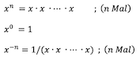

Übungen¶
Übungsbl√§tter (wochenweise)¶
Übung 0
- Installieren Sie sich - falls noch nicht geschehen - eine Java-Entwicklungsumgebung (siehe Java).
- Installieren Sie sich die IDE Ihrer Wahl (siehe IDE). In den Vorlesungen und Übungen (Videos) verwende ich Eclipse und beschreibe die Schritte auch für Eclipse.
- Starten Sie Eclipse durch Doppelklick auf das Programmsymbol.
- Erstellen Sie einen Workspace (Arbeitsbereich) in einem gewuÃànschten Ordner (z. B. Programmieren) im Dateisystem. Achten Sie darauf, dass Sie Schreibrechte in diesem Ordner besitzen.
- Anlegen eines Projektordners:
- Auswahl im Menü
File-->New-->Java Project. - Eingabe des
Project name:Name des Projektes (z.B. WiSe20). Wenn Sie gefragt werden, ob Sie einmodule-info.javaerstellen wollen, wählen SieDon't create. - Klicken auf den Button
Finish.
- Auswahl im Menü
- Erstellen eines neuen Packages (Paketes):
- Öffnen der Projektmappe im
Package Explorer. - Auswahl des Ordners
srcmit der rechten Maustaste. - Auswahl des Menüpunktes
New --> Package. - Geben Sie folgenden Paketnamen ein (Paketnamen werden kleingeschrieben)
uebungen.uebung0(Achten Sie auf den Punkt und dass Sie alles zusammen schreiben).
- Öffnen der Projektmappe im
- Erstellen einer neuen Klasse:
- Öffnen der Projektmappe im Package Explorer.
- Auswahl des Paketes (
uebungen.uebung0) mit der rechten Maustaste. - Auswahl des MenuÃàpunktes
New --> Class. - Eingabe des Namens, der gleichzeitig der Klassen- und Dateiname ist:
Uebung0. Klassennamen werden immer groß geschrieben. - Setzen des Häkchens bei
public static void main(). (Sollten Sie vergessen haben, das Häkchen zu setzen, dann ist die Klasse, nachdem SieFinishgedrückt haben, leer. Setzen Sie dann den Cursor zwischen die beiden geschweiften Klammern{ }, geben dannmainein und drücken die Ctrl+Leer-Tasten und anschließend Enter. Dann erscheint diemain()-Methode) - Klicken auf den Button
Finish.
- In die
main()-Methode (zwischen die geschweiften Klammern{und}geben Sie ein:System.out.println("Uebung 0"));. - Drücken Sie dann entweder auf den
 -Button oder wählen Sie aus dem Menü
-Button oder wählen Sie aus dem Menü Run --> Runoder drücken Sie shift+command+f11. In derConsolein Ihrer IDE (in Eclipse unten) erscheintUebung 0.
package uebungen.uebung0;
public class Uebung0
{
public static void main(String[] args)
{
System.out.println("Uebung 0");
}
}

Success
Fertig! Ihre Entwicklungsumgebung ist bereit! Wir können loslegen. 
Übung 1
- Erstellen Sie ein package
uebungen.uebung1. - Erstellen Sie in diesem package eine Klasse
Uebung1mitmain()-Methode. - Deklarieren und initialisieren Sie in der
main()-Methode jeweils eine Variable mit dem Datentypint,long,char,byte,short,float,double,booleanundString. Geben Sie alle Werte einzeln durch Aufruf derprintln()-Methode aus. Erzeugen Sie dabei folgende Ausgabe (Werte nur Beispiele):Wert vom Typ int : 123 Wert vom Typ long : 456789 Wert vom Typ char : a Wert vom Typ byte : 127 Wert vom Typ short : 32767 Wert vom Typ float : 4.23 Wert vom Typ double : 6.98 Wert vom Typ boolean : true Wert vom Typ String : Hallo! - Setzen Sie den Wert Ihrer
int-Variablen auf2147483647. Geben Sie den Wert auf der Konsole aus, z.B.:
Erhöhen Sie nun den Wert der Variablen umWert von i : 21474836471und geben Sie den Wert erneut aus. Was passiert? Warum? - Wiederholen Sie das gleiche mit einer `long-Variablen.
- Weisen Sie Ihrer
char-Variablen den Wert65zu. Geben Sie den Wert Ihrerchar-Variablen aus. Was passiert? Warum? - Schreiben Sie eine Methode
Diese Methode soll folgende Ausgabe auf die Konsole erzeugen, z.B. für
public static void printIntDivision(int nr1, int nr2) { }printIntDivision(7, 4);die Ausgabez.B. für7 geteilt durch 4 ergibt 1. Es bleibt ein Rest von 3printIntDivision(17, 4);die AusgabeSchreiben/ändern Sie die Methode so, dass bei einer ganzzahligen Division ohne Rest die Ausgabe in der Form ist (Aufruf z.B.17 geteilt durch 4 ergibt 4. Es bleibt ein Rest von 1printIntDivision(16, 4);):16 geteilt durch 4 ergibt 4 ohne Rest. - Schreiben Sie zwei Methoden
Deklarieren Sie in der main()-Methode zwei int-Variablen und weisen Sie diesen Werte zu (z.B.
public static int getQuotient(int nr1, int nr2) {} // und public static int getRemainder(int nr1, int nr2) {}17und4). Wenden Sie die beiden Methoden so an, dass mit Hilfe derprintln()-Methode folgende Ausgaben erscheinen:17/4 = 4 17 mod 4 = 1
Eine mögliche Lösung für Übung1
package uebungen.uebung1;
public class Uebung1
{
public static void printIntDivision(int nr1, int nr2)
{
int quotient = nr1 / nr2;
int rest = nr1 % nr2;
if(rest==0)
{
System.out.println(nr1 + " geteilt durch " + nr2 + " ergibt " + quotient + " ohne Rest.");
}
else
{
System.out.println(nr1 + " geteilt durch " + nr2 + " ergibt " + quotient
+ ". Es bleibt ein Rest von " + rest);
}
}
public static int getQuotient(int nr1, int nr2)
{
int quotient = nr1 / nr2;
return quotient;
}
public static int getRemainder(int nr1, int nr2)
{
int remainder = nr1 % nr2;
return remainder;
}
public static void main(String[] args)
{
int in = 123;
long lo = 456789;
char ch = 'a';
byte by = 127;
short sh = 32767;
float fl = 4.23f;
double d1 = 6.98;
boolean b1 = true;
String s1 = "Hallo!";
System.out.println(" --- Aufgabe 3 -------");
System.out.println();
System.out.println("Wert vom Typ int : " + in );
System.out.println("Wert vom Typ long : " + lo );
System.out.println("Wert vom Typ char : " + ch );
System.out.println("Wert vom Typ byte : " + by );
System.out.println("Wert vom Typ short : " + sh );
System.out.println("Wert vom Typ float : " + fl );
System.out.println("Wert vom Typ double : " + d1 );
System.out.println("Wert vom Typ boolean : " + b1 );
System.out.println("Wert vom Typ String : " + s1 );
System.out.println();
System.out.println(" --- Aufgabe 4 -------");
System.out.println();
in = 2147483647;
System.out.println("Wert vom Typ int : " + in );
in = in + 1; // in++;
System.out.println("Wert vom Typ int : " + in );
System.out.println();
System.out.println(" --- Aufgabe 5 -------");
System.out.println();
lo = 2147483647L;
System.out.println("Wert vom Typ long : " + lo );
lo = lo +1 ;
System.out.println("Wert vom Typ long : " + lo );
System.out.println();
System.out.println(" --- Aufgabe 6 -------");
System.out.println();
ch = 65;
System.out.println("Wert vom Typ char : " + ch );
System.out.println();
System.out.println(" --- Aufgabe 7 -------");
System.out.println();
printIntDivision(7, 4);
printIntDivision(17, 4);
printIntDivision(16, 4);
System.out.println();
System.out.println(" --- Aufgabe 7 -------");
System.out.println();
int number1 = 17;
int number2 = 4;
int result = getQuotient(number1, number2);
System.out.println(number1 + "/" + number2 + " = " + result);
int rest = getRemainder(number1, number2);
System.out.println(number1 + " mod " + number2 + " = " + rest);
}
}
Video zu Übung 1
Übung 2
- Erstellen Sie ein package
uebungen.uebung2. - Erstellen Sie in diesem package eine Klasse
Uebung2mitmain()-Methode. -
Schreiben Sie eine Methode
public static void printTimesTables(int nr1, int nr2). Bei Aufruf der Methode z.B. fürprintTimesTables(10,10);soll das kleine Ein-Mal-Eins in der folgenden Form ausgegeben werden:Ausgabe für printTimesTables(10,10);
1 * 1 = 1 1 * 2 = 2 1 * 3 = 3 1 * 4 = 4 1 * 5 = 5 1 * 6 = 6 1 * 7 = 7 1 * 8 = 8 1 * 9 = 9 1 * 10 = 10 2 * 1 = 2 2 * 2 = 4 2 * 3 = 6 2 * 4 = 8 2 * 5 = 10 2 * 6 = 12 2 * 7 = 14 2 * 8 = 16 2 * 9 = 18 2 * 10 = 20 3 * 1 = 3 3 * 2 = 6 3 * 3 = 9 3 * 4 = 12 3 * 5 = 15 3 * 6 = 18 3 * 7 = 21 3 * 8 = 24 3 * 9 = 27 3 * 10 = 30 4 * 1 = 4 4 * 2 = 8 4 * 3 = 12 4 * 4 = 16 4 * 5 = 20 4 * 6 = 24 4 * 7 = 28 4 * 8 = 32 4 * 9 = 36 4 * 10 = 40 5 * 1 = 5 5 * 2 = 10 5 * 3 = 15 5 * 4 = 20 5 * 5 = 25 5 * 6 = 30 5 * 7 = 35 5 * 8 = 40 5 * 9 = 45 5 * 10 = 50 6 * 1 = 6 6 * 2 = 12 6 * 3 = 18 6 * 4 = 24 6 * 5 = 30 6 * 6 = 36 6 * 7 = 42 6 * 8 = 48 6 * 9 = 54 6 * 10 = 60 7 * 1 = 7 7 * 2 = 14 7 * 3 = 21 7 * 4 = 28 7 * 5 = 35 7 * 6 = 42 7 * 7 = 49 7 * 8 = 56 7 * 9 = 63 7 * 10 = 70 8 * 1 = 8 8 * 2 = 16 8 * 3 = 24 8 * 4 = 32 8 * 5 = 40 8 * 6 = 48 8 * 7 = 56 8 * 8 = 64 8 * 9 = 72 8 * 10 = 80 9 * 1 = 9 9 * 2 = 18 9 * 3 = 27 9 * 4 = 36 9 * 5 = 45 9 * 6 = 54 9 * 7 = 63 9 * 8 = 72 9 * 9 = 81 9 * 10 = 90 10 * 1 = 10 10 * 2 = 20 10 * 3 = 30 10 * 4 = 40 10 * 5 = 50 10 * 6 = 60 10 * 7 = 70 10 * 8 = 80 10 * 9 = 90 10 * 10 = 100 -
Schreiben Sie eine Methode
public static void printTimesMatrix(int nr1, int nr2). Bei Aufruf der Methode z.B. für printTimesMatrix(10,10) soll das kleine Ein-Mal-Eins in der folgenden Form ausgegeben werden:Ausgabe für printTimesMatrix(10,10);
1 2 3 4 5 6 7 8 9 10 2 4 6 8 10 12 14 16 18 20 3 6 9 12 15 18 21 24 27 30 4 8 12 16 20 24 28 32 36 40 5 10 15 20 25 30 35 40 45 50 6 12 18 24 30 36 42 48 54 60 7 14 21 28 35 42 49 56 63 70 8 16 24 32 40 48 56 64 72 80 9 18 27 36 45 54 63 72 81 90 10 20 30 40 50 60 70 80 90 100 -
Schreiben Sie eine Methode
public static void printTriangleUp(int height). Bei Aufruf der Methode z.B. fürprintTriangleUp(7)soll folgende Ausgabe erscheinen:******* ****** ***** **** *** ** * -
Geben Sie alle möglichen Kombinationen für 3 ganze Zahlen
x,yundzaus, für die gilt:x <= y <= z und x * y * z = 36 - Schreiben Sie eine Umrechnung für eine gegebene Anzahl von Sekunden (
printSeconds(int seconds)), z.B.printSeconds(3456789):Aber z.B.3456789 Sekunden sind 40 Tage, 13 Minuten, 9 Sekunden.printSeconds(2345678):Aber z.B.2345678 Sekunden sind 27 Tage, 3 Stunden, 34 Minuten, 38 Sekunden.printSeconds(123456):Aber z.B.123456 Sekunden sind 1 Tag, 10 Stunden, 17 Minuten, 36 Sekunden.printSeconds(12345):12345 Sekunden sind 3 Stunden, 25 Minuten, 45 Sekunden. - Schreiben Sie eine Methode, die für eine natürliche Zahl deren Quersumme ausgibt, z.B.:
crossSum(12345678)Die Quersumme von 12345678 ist 36.
Eine mögliche Lösung für Übung 2
package uebungen.uebung2;
public class Uebung2
{
public static void printTimesTables(int nr1, int nr2)
{
for(int faktor1 = 1; faktor1<=nr1; faktor1++)
{
for(int faktor2 = 1; faktor2<=nr2; faktor2++)
{
int produkt = faktor1 * faktor2;
System.out.println(faktor1 + " * " + faktor2 + " = " + produkt);
}
System.out.println();
}
}
public static void printTimesMatrix(int nr1, int nr2)
{
for(int faktor1 = 1; faktor1 <= nr1; faktor1++)
{
for(int faktor2 = 1; faktor2 <= nr2; faktor2++)
{
int produkt = faktor1 * faktor2;
System.out.print(produkt + " ");
}
System.out.println();
}
}
public static void printTriangleUp(int height)
{
for(int row=0; row<height; row++)
{
//System.out.println("Zeile : " + row + " Sterne : " + (height-row));
for(int stars=row; stars < height; stars++)
{
System.out.print("*");
}
/*
System.out.print(" ");
for(int stars=0; stars<=row; stars++)
{
System.out.print("*");
}
System.out.print(" ");
for(int stars=0; stars<=row; stars++)
{
System.out.print("*");
}
*/
System.out.println();
}
}
public static void printXYZ()
{
int product = 36;
for(int z = -product; z <= product; z++)
{
for(int y = -product; y <= z; y++)
{
for(int x = -product; x <= y; x++)
{
//if(x * y * z == product && (x <= y) && y <= z)
if(x * y * z == product)
{
System.out.println("z=" + z + " y=" + y + " x=" + x);
}
}
}
}
}
public static void printSeconds(int seconds)
{
int minute = 60;
int hour = 60 * minute; // 3600
int day = 24 * hour; // 86400
int days = seconds / day;
int restSeconds = seconds - (days * day);
int hours = restSeconds / hour;
restSeconds = restSeconds - (hours * hour);
int minutes = restSeconds / minute;
restSeconds = restSeconds - (minutes * minute);
/*
System.out.println(seconds + " Sekunden sind " + days + " Tage, "
+ hours + " Stunden, " + minutes + " Minuten, " + restSeconds + " Sekunden.");
*/
String output = seconds + " Sekunden sind ";
if(days==1)
{
output = output + " 1 Tag, ";
}
else
{
if(days > 1)
{
output = output + days + " Tage, ";
}
}
if(hours==1)
{
output = output + " 1 Stunde, ";
}
else
{
if(hours > 1)
{
output = output + hours + " Stunden, ";
}
}
if(minutes==1)
{
output = output + " 1 Minute, ";
}
else
{
if(minutes > 1)
{
output = output + minutes + " Minuten, ";
}
}
if(restSeconds==1)
{
output = output + " 1 Sekunde.";
}
else
{
if(restSeconds > 1)
{
output = output + restSeconds + " Sekunden.";
}
}
System.out.println(output);
}
public static int crossSum(int number)
{
int sum = 0;
int rest = number % 10; // letzte Ziffer
sum = sum + rest;
int result = number / 10; // Zahl ohne letzte Ziffer
while(result > 0)
{
rest = result % 10;
sum = sum + rest;
result = result / 10;
}
return sum;
}
public static void main(String[] args)
{
System.out.println("----- Aufgabe 1 ------");
System.out.println();
printTimesTables(10, 10);
System.out.println();
System.out.println("----- Aufgabe 2 ------");
System.out.println();
printTimesMatrix(10, 10);
System.out.println();
System.out.println("----- Aufgabe 3 ------");
System.out.println();
printTriangleUp(7);
System.out.println();
System.out.println("----- Aufgabe 4 ------");
System.out.println();
printXYZ();
System.out.println();
System.out.println("----- Aufgabe 5 ------");
System.out.println();
printSeconds(3456789);
printSeconds(2345678);
printSeconds(123456);
printSeconds(12345);
System.out.println();
System.out.println("----- Aufgabe 6 ------");
System.out.println();
int number = 123456789;
int crossSum = crossSum(number);
System.out.println("Die Quersumme von " + number + " ist " + crossSum + ".");
}
}
Video zu Übung 2
Übung 3
- Erstellen Sie ein package
uebungen.uebung3. - Erstellen Sie in diesem package eine Klasse
Uebung3mitmain()-Methode. - Implementieren Sie folgende Methoden:
public static int inputInt()– in dieser Methode wird über die Konsole eineint-Zahl eingelesen. Diese Zahl wird von der Methode zurückgegeben.public static boolean isPrime(int number)– diese Methode prüft, ob die als Parameter übergebenenumbereine Primzahl ist. Die Methode gibt eintruezurück, wennnumbereine Primzahl ist undfalsesonst.public static void printPrimeNumbers(int maximum)– diese Methode gibt alle Primzahlen von 1 bis einschließlichmaximumwie folgt auf der Konsole aus (Bsp. fürmaximum=61):d.h. es werden die Zahlen, die Primzahlen sind, ausgegeben und für die anderen Zahlen erscheint nur ein Punkt. Verwenden Sie in der MethodeZahl : 61 .2 3 .5 .7 ...11 .13 ...17 .19 ...23 .....29 .31 .....37 ...41 .43 ...47 .....53 .....59 .61printPrimenumbers(int)die MethodeisPrime(int).public static int getSmallestDivider(int number)– diese Methode gibt den kleinsten Teiler zurück, dernumberganzzahlig teilt. Istnumbereine Primzahl, wirdnumberzurückgegeben. Für den Fall, dassnumberkleiner als2ist, geben Sie ebenfallsnumberzurück.public static String createStringOfPrimeFactorization(int number)– diese Methode gibt einen String in folgender Form zurück (Bsp. fürnumber=632060):d.h. alle kleinsten Teiler werden mit dem Multiplikationszeichen verbunden und am Ende erscheint" 2 * 2 * 5 * 11 * 13 * 13 * 17 = 632060 "= Wert von number.- Testen Sie alle Methoden. Rufen Sie insbesondere
inputInt(),printPrimenumbers(int)undcreateStringOfPrimeFactorization(int)in dermain()-Methode auf.
- Tipp: Bei der Überprüfung, ob
numbereine Primzahl ist, genügt es, Teiler bis zur Wurzel vonnumberzu suchen. Werden bis dahin keine Teiler gefunden, istnumbereine Primzahl. Sie können sich dazu z.B. eine Variable der Formint bound = (int) Math.sqrt(number);erstellen und müssen dann den Teiler nur bisboundsuchen (der Typkonvertierungsoperator(int)macht aus derdouble-Zahl einenint- schneidet die Nachkommastellen ab).
Eine mögliche Lösung für Übung 3
package uebungen.uebung3;
import java.util.Scanner;
public class Uebung3
{
public static int inputInt()
{
Scanner sc = new Scanner(System.in);
System.out.print("Geben Sie eine Zahl ein : ");
int number = sc.nextInt();
sc.close();
return number;
}
public static boolean isPrime(int number)
{
boolean isPrime = true; // true ist wichtig!
if(number<2)
{
isPrime = false;
}
else
{
if(number==2)
{
isPrime=true;
}
else
{
for(int divider=2; divider<=Math.sqrt(number) && isPrime; divider++)
{
if(number % divider == 0)
{
isPrime = false;
}
}
}
}
return isPrime;
}
public static void printPrimeNumbers(int maximum)
{
for(int number=1; number<=maximum; number++)
{
if(isPrime(number))
{
System.out.print(number+" ");
}
else
{
System.out.print(". ");
}
if(number%30 == 0)
{
System.out.println();
}
}
}
public static int getSmallestDivider(int number)
{
int smallestDivider = 0;
boolean found = false;
if(number<2)
{
smallestDivider = number;
}
else
{
if(isPrime(number))
{
smallestDivider = number;
}
else
{
for(int divider=2; divider<number && !found; divider++)
{
if(number % divider == 0)
{
smallestDivider = divider;
found = true;
}
}
}
}
return smallestDivider;
}
public static String createStringOfPrimeFactorization(int number)
{
String s = "";
/*
* 2 * 2 * 5 * 11 * 13 * 13 * 17 = 632060
* 632060 --> 2
* 316030 --> 2
* 158015 --> 5
* ... --> divider
* result/divider == 1
*/
int smallestDivider = getSmallestDivider(number);
s = s + smallestDivider;
int result = number/smallestDivider;
while(result > 1)
{
smallestDivider = getSmallestDivider(result);
s = s + " * " + smallestDivider;
result = result/smallestDivider;
}
s = s + " = " + number;
return s;
}
public static void main(String[] args)
{
System.out.printf("%n%n----------- Aufgabe 1 ------------ %n %n");
int number = inputInt();
System.out.println("Sie haben " + number + " eingegeben.");
System.out.printf("%n%n----------- Aufgabe 2 ------------ %n %n");
System.out.println(isPrime(number));
System.out.printf("%n%n----------- Aufgabe 3 ------------ %n %n");
printPrimeNumbers(number);
System.out.printf("%n%n----------- Aufgabe 4 ------------ %n %n");
System.out.println(getSmallestDivider(number));
System.out.printf("%n%n----------- Aufgabe 5 ------------ %n %n");
String output = createStringOfPrimeFactorization(632060);
System.out.println(output);
}
}
Video zu Übung 3
Übung 4
- Erstellen Sie ein package
uebungen.uebung4. - Erstellen Sie in diesem package eine Klasse
Uebung4mitmain()-Methode. -
Implementieren Sie folgende Methoden:
-
Implementieren Sie eine
public static void print(char[] ca)-Methode, so dass daschar[] caauf die Konsole ausgegeben wird. Achten Sie darauf, dass hinter dem letzten Element kein Komma steht. Testen Sie Ihre Methode auch für ein leeres Array.
Bsp:print(['a', 'b', 'c', 'a', 'c', 'a', 'b', 'c'])
Ausgabe auf Konsole:[a, b, c, a, c, a, b, c] -
Kopieren Sie die
print-Methode vollständig und ändern Sie den Typ des Parameters vonchar[]inint[]. (Die Methode ist jetzt überladen undprint()kann jetzt entweder einchar[]oder einint[]übergeben werden, welches auf die Konsole ausgegeben wird.) -
Implementieren Sie eine Methode
public static char[] stringToCharArray(String s). Diese Methode wandelt einenStringin einchar[]um, so dass jedes Zeichen des Strings imchar[]enthalten ist. Daschar[]wird zurückgegeben. Tipps: die Länge eines Strings wird mit der Objektmethodelength()ermittelt. Die einzelnen Zeichen eines Strings können mithilfe dercharAt(index)-Objektmethode von Strings ermittelt werden. Siehe String
Bsp.:stringToCharArray("hallo!")→['h','a','l','l','o','!'] -
Implementieren Sie eine Methode
public static char[] filter(char[] carr, char filter), der als Parameter einchar-Array und eincharübergeben wird. Die Methode soll einchar-Array zurückgeben, das dem als Parameter übergeben Array entspricht, außer dass jedes Vorkommen des als Parameter übergebencarrentfernt wurde
Bsp:filter(['a', 'b', 'c', 'a', 'c', 'a', 'b', 'c'], 'c')→['a', 'b', 'a', 'a', 'b'] -
Implementieren Sie eine Methode
public static int[] minAndMax(int[] iarr), der einint-Array als Parameter übergeben wird und die ein zweielementiges Array zurückgibt. Das erste Element des zurückgegeben Arrays ist das Minimum des als Parameter übergebenen Arrays und das zweite Element ist das Maximum.
Bsp.:minAndMax([4,2,8,1,6,2,4,1,8])→[1,8]
minAndMax([4])→[4,4] -
Implementieren Sie eine Methode
public static int[] reverse(int[] iarr), der einint-Array übergeben wird und die die Reihenfolge der Elemente des Arrays umdreht (das letzte zuerst usw.) Das neuerstellte Array wird zurückgegeben.
Bsp.:reverse([4,2,8,1,6,2,4,1,8])→[8,1,4,2,6,1,8,2,4]
reverse([4])→[4] -
Zusatz: Implementieren Sie eine Methode
public static boolean containsDoublets(char[] ca)die eintruezurückgibt, wenn mindestens ein Wert incamindestens zwei Mal vorkommt (wenn Sie schon dabei sind, können Sie sich auch überlegen, wenn genau ein Wert genau zwei Mal vorkommt - oder mindestens ein Wert genau zwei Mal - oder genau ein Wert mindestens zwei Mal) undfalsesonst.
-
Eine mögliche Lösung für Übung 4
package uebungen.uebung4;
public class Uebung4
{
public static void print(char[] ca)
{
System.out.print("[ ");
/*
for (int index = 0; index < ca.length-1; index++)
{
System.out.print(ca[index] + ", ");
}
if(ca.length>0)
{
System.out.print(ca[ca.length-1]);
}
*/
for (int index = 0; index < ca.length; index++)
{
if(index < ca.length-1)
{
System.out.print(ca[index] + ", ");
}
else // letztes Element
{
System.out.print(ca[index]);
}
}
System.out.println(" ]");
}
public static void print(int[] ca)
{
System.out.print("[ ");
for (int index = 0; index < ca.length; index++)
{
if(index < ca.length-1)
{
System.out.print(ca[index] + ", ");
}
else // letztes Element
{
System.out.print(ca[index]);
}
}
System.out.println(" ]");
}
public static char[] filter(char[] carr, char filter)
{
// filter(['a', 'b', 'c', 'a', 'c', 'a', 'b', 'c'], 'c') → ['a', 'b', 'a', 'a', 'b']
// Laenge des neuen Arrays ermitteln
// Anzahl des Vorkommens von filter in carr
// Laenge von carr - Anzahl des Vorkommens
int nrOfOccurrences = 0;
for (int index = 0; index < carr.length; index++)
{
if(carr[index]==filter)
{
nrOfOccurrences++;
}
}
int newLength = carr.length - nrOfOccurrences;
// Erzeugen des neuen Arrays
char[] caNew = new char[newLength];
// Befuellen des neuen Arrays
int indexNewArr = 0;
for (int index = 0; index < carr.length; index++)
{
if(carr[index]!=filter)
{
caNew[indexNewArr] = carr[index];
indexNewArr++;
}
}
return caNew;
}
public static char[] stringToCharArray(String s)
{
char[] ca = new char[s.length()];
for (int index = 0; index < ca.length; index++)
{
ca[index] = s.charAt(index);
}
return ca;
}
public static int[] minAndMax(int[] iarr)
{
int curMin = iarr[0];
int curMax = iarr[0];
for (int index = 0; index < iarr.length; index++)
{
if(iarr[index] < curMin)
{
curMin = iarr[index];
}
if(iarr[index] > curMax)
{
curMax = iarr[index];
}
}
// int[] ra = { curMin, curMax };
int[] ra = new int[2];
ra[0] = curMin;
ra[1] = curMax;
return ra;
}
public static int[] reverse(int[] iarr)
{
int[] iaNew = new int[iarr.length];
for (int index = 0; index < iaNew.length; index++)
{
iaNew[index] = iarr[iarr.length-1 - index];
}
return iaNew;
}
/*
* ----------- ab hier Zusatzaufgabe -------------------
*
* fuer die Zusatzaufgabe containsDoublets(char[])
* schreiben wir uns erstmal eine Hilfsmethode
* nrOfOccurrences(char[] ca. char element), die ermittelt,
* wie oft ein element in ca vorkommt
*/
public static int norOfOccurrences(char[] ca, char element)
{
int nrOfOccurrences = 0;
for (int index = 0; index < ca.length; index++)
{
if(ca[index] == element)
{
nrOfOccurrences++;
}
}
return nrOfOccurrences;
}
public static boolean containsDoublets(char[] ca)
{
boolean doublet = false;
for (int index = 0; index < ca.length && !doublet; index++)
{
if (norOfOccurrences(ca, ca[index]) >= 2)
{
doublet = true;
}
}
return doublet;
}
public static void main(String[] args)
{
System.out.printf("%n%n ---------------- Aufgabe 1 ----------%n%n");
char[] carr1 = new char[10];
char c1 = 'w';
carr1[0] = 'w';
carr1[1] = 'i';
carr1[2] = 'o';
carr1[3] = 'u';
carr1[4] = 'w';
carr1[5] = 'r';
carr1[6] = 'e';
carr1[7] = '2';
carr1[8] = '!';
carr1[9] = 'q';
// carr1[10] = 'w'; // ArrayIndexOutOfBoundsException
char[] carr2 = {'a', 'b', 'c', 'a', 'c', 'a', 'b', 'c'};
print(carr1);
print(carr2);
char[] carr3 = new char[0];
print(carr3);
System.out.printf("%n%n ---------------- Aufgabe 2 ----------%n%n");
int[] iarr1 = { 4,2,8,1,6,2,4,1,8 };
print(iarr1);
System.out.printf("%n%n ---------------- Aufgabe 3 ----------%n%n");
String s1 = "Hallo FIW!";
// System.out.println(s1.charAt(9));
char[] carr4 = stringToCharArray(s1);
print(carr4);
System.out.printf("%n%n ---------------- Aufgabe 4 ----------%n%n");
print(carr2);
char[] carr5 = filter(carr2, 'c');
print(carr5);
carr5 = filter(carr2, 'a');
print(carr5);
carr5 = filter(carr2, 'b');
print(carr5);
carr5 = filter(carr2, 'd');
print(carr5);
System.out.printf("%n%n ---------------- Aufgabe 5 ----------%n%n");
int[] iarr2 = minAndMax(iarr1);
print(iarr2);
System.out.println("Minimum : " + iarr2[0] + " Maximum : " + iarr2[1]);
int[] iarr3 = { 4 };
iarr2 = minAndMax(iarr3);
print(iarr2);
System.out.println("Minimum : " + iarr2[0] + " Maximum : " + iarr2[1]);
System.out.printf("%n%n ---------------- Aufgabe 6 ----------%n%n");
int[] iarr4 = reverse(iarr1);
print(iarr1);
print(iarr4);
System.out.printf("%n%n ---------------- Zusatzaufgabe ----------%n%n");
System.out.println(containsDoublets(carr2));
char[] carr6 = { 'a', 'b', 'c', 'd', 'e', 'f', 'g', 'h'};
char[] carr7 = { 'a', 'b', 'c', 'd', 'e', 'f', 'g', 'a'};
char[] carr8 = { };
char[] carr9 = { 'a', 'a'};
System.out.println(containsDoublets(carr6));
System.out.println(containsDoublets(carr7));
System.out.println(containsDoublets(carr8));
System.out.println(containsDoublets(carr9));
}
}
Video zu Übung 4
Übung 5
- Erstellen Sie ein package
uebungen.uebung5. - Erstellen Sie in diesem package eine Klasse
Uebung5mitmain()-Methode. -
Vorabinformation:
-
Wir implementieren Würfe eines Würfels. Alle Würfe werden in einem Array
statisticsgespeichert. Das Array hat die Länge 6 und beschreibt, wie oft eine 1, wie oft eine 2, ..., wie oft eine 6 gewürfelt wurde.
-
-
Erstellen Sie sich in der
main()-Methode zunächst dasstatistics-Array. Alle Elemente des Arrays sind vom Typintund es hat die Länge6. -
Implementieren Sie folgende Methoden:
-
Implementieren Sie eine
public static int throwDice()-Methode, die eine Zufallszahl aus dem Wertebereich[1, ... , 6]erzeugt und zurückgibt. -
Implementieren Sie eine Methode
public static void printThrow(int cast), die den Wert des übergebenen Wurfes (cast) wie folgt ausgibt (Beispielcast==5):Es wurde eine 5 gewuerfelt -
Testen Sie beide Methoden, indem Sie in der
main()-Methode eingeben:System.out.printf("%n%n------------------- Test throwDice and printThrow -------------------%n%n"); for(int index=0; index<10; index++) { int cast = throwDice(); printThrow(cast); }Sie sollten eine Ausgabe in folgender Form bekommen (Zufallszahlen):
------------------- Test throwDice and printThrow ------------------- Es wurde eine 5 gewuerfelt Es wurde eine 4 gewuerfelt Es wurde eine 6 gewuerfelt Es wurde eine 5 gewuerfelt Es wurde eine 3 gewuerfelt Es wurde eine 4 gewuerfelt Es wurde eine 1 gewuerfelt Es wurde eine 5 gewuerfelt Es wurde eine 6 gewuerfelt Es wurde eine 6 gewuerfelt -
Implementieren Sie eine Methode
public static int[] insertIntoStatistics(int[] statistics, int cast). Dasstatistics-Array wird als Parameter übergeben und dasstatistics-Array selbst wird auch wieder zurückgegeben! Imstatistics-Array wird der Wert an der Stelle um1erhöht, der dem Wurfcastentspricht. D.h. wurde eine1gewürfelt, wird der Wert im Index0um1erhöht, wurde eine2gewürfelt, der Wert im Index1usw. (siehe auch oben die Abbildung zustatistics) -
Implementieren Sie eine Methode
public static void printStatistics(int[] statistics), die dasstatistics-Array wie folgt auf die Konsole ausgibt.Angenommen, das
statistics-Array ist so befüllt:[ 3,8,4,5,8,2 ], dann ist die Ausgabe auf der Konsole:[ (3 x 1), (8 x 2), (4 x 3), (5 x 4), (8 x 5), (2 x 6) ] -
Testen Sie beide Methoden, indem Sie in der
main()-Methode eingeben:System.out.printf("%n%n------------------ Test insert- and printStatistics -----------------%n%n"); for(int index=0; index<100; index++) { int cast = throwDice(); statistics = insertIntoStatistics(statistics, cast); } printStatistics(statistics);Es wird angenommen, dass Sie das
statistics-Array bereits gleich am Anfang in dermain()erzeugt haben - wenn nicht, können Sie das auch hier machen. Beachten Sie den Aufruf vonstatistics = insertIntoStatistics(statistics, cast);. DieinsertIntoStatistics()-Methode bekommt dasstatistics-Array als Parameter übergeben, gibt es selbst wieder zurück und in dermain()-Methode speichern wir die Rückgabe wieder in derstatistics-Referenz. Das ist zwar so gar nicht nötig, aber das lernen wir erst, wenn es um Objekte geht. Jetzt ist es völlig in Ordnung, das so zu machen.Sie sollten eine Ausgabe in folgender Form bekommen (Zufallszahlen):
------------------ Test insert- and printStatistics ----------------- [ (20 x 1), (13 x 2), (16 x 3), (15 x 4), (19 x 5), (17 x 6) ] -
Implementieren Sie eine Methode
public static int sumOfStatistics(int[] statistics), die eine Summe über alle Werte imstatistics-Array wie folgt berechnet:Beispiel: Angenommen, das Array ist so befüllt:
[ 3,8,4,5,8,2 ], dann ist die Summe:3x1 + 8x2 + 4x3 + 5x4 + 8x5 + 2x6 = 3 + 16 + 12 + 20 + 40 + 12 = 103. Die Summe103wird zurückgegeben. -
Testen Sie die Methode, indem Sie in der
main()-Methode eingeben:System.out.printf("%n%n--------------------- Test sumOfStatistics --------------------------%n%n"); printStatistics(statistics); int sumTest = sumOfStatistics(statistics); System.out.println("Summe = " + sumTest);Das
statistics-Array ist ja bereits oben befüllt worden, das müssen wir hier also nicht mehr machen. Sie sollten eine Ausgabe in folgender Form bekommen (Zufallszahlen):--------------------- Test sumOfStatistics -------------------------- [ (14 x 1), (15 x 2), (11 x 3), (16 x 4), (27 x 5), (17 x 6) ] Summe = 378 -
Zusatz: Implementieren Sie eine Methode
public static int throwDiceUntilTarget(int target, int[] statistics), die so lange einen Würfel würfelt, bis als Summe der Augen dastargeterreicht ist. Die Anzahl der Würfe wird zurückgegeben. In dieser Methode erfolgen folgende Aufrufe:- nach jedem Wurf (
throwDice()) wird der Wurf ausgegeben (printThrow()) - jeder Wurf wird in das
statistics-Array eingetragen (insertIntoStatistics()) - nach jedem Wurf wird die Summme aller Augen aller bisherigen Würfe ermittelt (
sumOfStatistics()). - so lange die Summe kleiner ist als das
target, wird weiter gewürfelt
- nach jedem Wurf (
-
Testen Sie die Methode, indem Sie in der
main()-Methode eingeben:System.out.printf("%n%n------------------- Test throwDiceUntilTarget -----------------------%n%n"); statistics = new int[6]; // altes Array war schon befuellt final int TARGET = 100; int tries = throwDiceUntilTarget(TARGET, statistics); printStatistics(statistics); int sum = sumOfStatistics(statistics); System.out.println("Es wurden " + tries + " Versuche benötigt, um " + sum + " Punkte zu erzielen.");Da das
statistics-Array zuvor bereits befüllt war, erstellen wir es für das Testen dieser Methode nochmal neu. Sie sollten eine Ausgabe in folgender Form bekommen (Zufallszahlen):------------------- Test throwDiceUntilTarget ----------------------- Es wurde eine 5 gewuerfelt Es wurde eine 1 gewuerfelt Es wurde eine 5 gewuerfelt Es wurde eine 3 gewuerfelt Es wurde eine 5 gewuerfelt Es wurde eine 2 gewuerfelt Es wurde eine 5 gewuerfelt Es wurde eine 3 gewuerfelt Es wurde eine 4 gewuerfelt Es wurde eine 3 gewuerfelt Es wurde eine 3 gewuerfelt Es wurde eine 3 gewuerfelt Es wurde eine 1 gewuerfelt Es wurde eine 1 gewuerfelt Es wurde eine 2 gewuerfelt Es wurde eine 3 gewuerfelt Es wurde eine 6 gewuerfelt Es wurde eine 3 gewuerfelt Es wurde eine 3 gewuerfelt Es wurde eine 2 gewuerfelt Es wurde eine 3 gewuerfelt Es wurde eine 2 gewuerfelt Es wurde eine 6 gewuerfelt Es wurde eine 4 gewuerfelt Es wurde eine 3 gewuerfelt Es wurde eine 1 gewuerfelt Es wurde eine 4 gewuerfelt Es wurde eine 3 gewuerfelt Es wurde eine 4 gewuerfelt Es wurde eine 1 gewuerfelt Es wurde eine 6 gewuerfelt [ (5 x 1), (4 x 2), (11 x 3), (4 x 4), (4 x 5), (3 x 6) ] Es wurden 31 Versuche benötigt, um 100 Punkte zu erzielen.Es muss das
targetnicht exakt getroffen werden, das ist Zufall. Es stoppt, sobald100oder mehr Punkte erreicht wurden.
-
Eine mögliche Lösung für Übung 5
package uebungen.uebung5;
import java.util.Random;
public class Uebung5
{
public static int throwDice()
{
Random r = new Random();
int wurf = r.nextInt(6) + 1;
return wurf;
}
public static void printThrow(int cast)
{
System.out.println("Es wurde eine " + cast + " gewuerfelt");
}
public static int[] insertIntoStatistics(int[] statistics, int cast)
{
if(cast>=1 && cast<=6)
{
statistics[cast-1]++;
}
return statistics;
}
public static void printStatistics(int[] statistics)
{
System.out.print("[ ");
for (int index = 0; index < statistics.length; index++) // index = index + 1
{
if(index < statistics.length-1)
{
System.out.print("(" + statistics[index] + " x " + (index+1) + "), ");
}
else // index == statistics.length-1
{
System.out.print("(" + statistics[index] + " x " + (index+1) + ")");
}
}
System.out.println(" ]");
}
public static int sumOfStatistics(int[] statistics)
{
int sum = 0;
for (int index = 0; index < statistics.length; index++)
{
sum = sum + (statistics[index] * (index+1));
}
return sum;
}
public static int throwDiceUntilTarget(int target, int[] statistics)
{
int tries = 0;
int cast = throwDice();
printThrow(cast); // Nebeneffekt - nicht so gut!
tries++;
insertIntoStatistics(statistics, cast);
int sum = sumOfStatistics(statistics);
while(sum < target)
{
cast = throwDice();
printThrow(cast); // Nebeneffekt - nicht so gut!
tries++;
insertIntoStatistics(statistics, cast);
sum = sumOfStatistics(statistics);
}
return tries;
}
public static void main(String[] args)
{
int[] statistics = new int[6];
System.out.printf("%n%n------------------- Test throwDice and printThrow -------------------%n%n");
for(int index=0; index<10; index++)
{
int cast = throwDice();
printThrow(cast);
}
System.out.printf("%n%n------------------ Test insert- and printStatistics -----------------%n%n");
for(int index=0; index<100; index++)
{
int cast = throwDice();
statistics = insertIntoStatistics(statistics, cast);
}
printStatistics(statistics);
System.out.printf("%n%n--------------------- Test sumOfStatistics --------------------------%n%n");
printStatistics(statistics);
int sumTest = sumOfStatistics(statistics);
System.out.println("Summe = " + sumTest);
System.out.printf("%n%n------------------- Test throwDiceUntilTarget -----------------------%n%n");
statistics = new int[6]; // altes Array war schon befuellt
final int TARGET = 100;
int tries = throwDiceUntilTarget(TARGET, statistics);
printStatistics(statistics);
int sum = sumOfStatistics(statistics);
System.out.println("Es wurden " + tries + " Versuche benötigt, um " + sum + " Punkte zu erzielen.");
}
}
Video zu Übung 5
Übung 6
- Erstellen Sie ein package
uebungen.uebung6. - Erstellen Sie in diesem package eine Klasse
Konto(ohnemain()-Methode!) - Erstellen Sie in diesem package eine Klasse
Testklassemitmain()-Methode - Erstellen Sie in der Klasse
Kontozwei Objektvariablenguthabenvom Typdouble→ nur in der Klasse sichtbar!pinvom Typint→ ebenfalls nur in der Klasse sichtbar!
- Erstellen Sie in der Klasse
Kontoeinen Konstruktor fürKonto- diesem Konstruktor wird als Parameter
int pPinübergeben - mit dem Wert des Parameters wird innerhalb des Konstruktors der Wert von
pininitialisiert - Initialisieren Sie im Konstruktor auch die Objektvariable
guthaben. Sie bekommt den Wert0.0(hierfür haben wir also keinen Parameter, wir setzen den initialen Wert einfach generell auf0.0)
- diesem Konstruktor wird als Parameter
- Erstellen Sie in der Klasse
Kontoeine Objektmethodeeinzahlen(double betrag)- diese Objektmethode ist
publicund gibt nichts zurück - in dieser Methode wird der Wert der Objektvariablen
guthabenum den Wert vonbetragerhöht - erzeugen Sie in dieser Methode außerdem eine Ausgabe in der Form:
falls der
Es wurden 100,00 Euro eingezahlt.betragden Wert100.0hatte. Verwenden Sie am besten dieprintf()-Methode, um stets genau 2 Stellen nach dem Komma des Betrages auszugeben (siehe hier).
- diese Objektmethode ist
- Geben Sie in der
main()-Methode derTestklasseein:und führen Sie dieKonto k1 = new Konto(1234); k1.einzahlen(100.0); k1.einzahlen(50.0); k1.einzahlen(150.0);Testklasseaus. Es sollten folgende Ausgaben erzeugt werden:Es wurden 100,00 Euro eingezahlt. Es wurden 50,00 Euro eingezahlt. Es wurden 150,00 Euro eingezahlt. - Erstellen Sie in der Klasse
Kontoeine Objektmethodekontoauszug(int pPin)- diese Objektmethode ist
publicund gibt nichts zurück - einen
kontoauszug(int pPin)können Sie nur "ziehen", wenn der Parameterwert vonpPinmit dem Wert der Objektvariablenpinübereinstimmt - wird der richtige Wert für die
pinübergeben, geben Sie dasguthabenin der folgenden Form aus:fallsIhr aktuelles Guthaben betraegt 300,00 Euro.guthabenden Wert von300.0hat. - wird ein falscher Wert für die
pinübergeben, geben Sie folgende Ausgabe aus:Falsche PIN!
- diese Objektmethode ist
- Erweitern Sie die
main()-Methode der Testklasse um folgende Anweisungen:und führen Sie diek1.kontoauszug(1235); // Falsche PIN! k1.kontoauszug(1234);Testklasseaus. Es sollten folgende (weitere) Ausgaben erzeugt werden:Falsche PIN! Ihr aktuelles Guthaben betraegt 300,00 Euro. - Erstellen Sie in der Klasse
Kontoeine Objektmethodeauszahlen(int pPin, double betrag)- diese Objektmethode ist
publicund gibt nichts zurück - es kann nur etwas ausgezahlt werden, wenn der Parameterwert von
pPinmit dem Wert der Objektvariablenpinübereinstimmt - stimmen die Werte nicht überein, geben Sie erneut
aus.
Falsche PIN! - stimmt der
pin-Wert, dann müssen Sie prüfen, ob dasguthabenreicht, umbetragauszuzahlen. Ist nicht genugguthabenvorhanden, dann geben Sie ausfallsIhr Guthaben reicht nicht, um 400,00 Euro auszuzahlen.betragden Wert400.0hatte. - wenn der
pin-Wert stimmt und genugguthabenvorhanden ist, um denbetragauszuzahlen, dann reduzieren Sieguthabenum den entsprechendenbetragund geben ausfalls derEs wurden 100,00 Euro ausgezahlt.betragden Wert100.0hatte.
- diese Objektmethode ist
- Erweitern Sie die
main()-Methode der Testklasse um folgende Anweisungen:und führen Sie diek1.auszahlen(1235, 100.0); // Falsche PIN! k1.auszahlen(1234, 100.0); k1.kontoauszug(1234); k1.auszahlen(1234, 300.0); // Guthaben reicht nicht k1.auszahlen(1234, 200.0); k1.kontoauszug(1234);Testklasseaus. Es sollten folgende (weitere) Ausgaben erzeugt werden:Falsche PIN! Es wurden 100,00 Euro ausgezahlt. Ihr aktuelles Guthaben betraegt 200,00 Euro. Ihr Guthaben reicht nicht, um 300,00 Euro auszuzahlen. Es wurden 200,00 Euro ausgezahlt. Ihr aktuelles Guthaben betraegt 0,00 Euro. - Zusatz:
- Erweitern Sie die Klasse um eine weitere Objektvariable
private double dispogrenze - Initialisieren Sie diese Variable innerhalb des Konstruktors (ohne weiteren Parmeter) auf den Wert
-1000.0. Sie dürfen somit Ihr Konto um1000.00 Euroüberziehen. - Passen Sie die
auszahlen()-Methode entsprechend an, so dass es auch möglich ist, einenbetragauszuzahlen, so lange man nicht unter diedispogrenzefällt. - Erstellen Sie eine Methode
public void zinsenZahlen().- Erstellen Sie in dieser Methode zwei Konstanten
DISPOZINSENvom Typdoublebekommt den Wert12.0(soll12%entsprechen) undGUTHABENZINSENvom Typdoublebekommt den Wert0.5(soll0.5%entsprechen)
- Berechnen Sie innerhalb der Methode die Zinsen für das Konto
DISPOZINSENwerden fällig (werden vonguthabenabgezogen), fallsguthabennegativ istGUTHABENZINSENwerden gewährt (werden zuguthabenaddiert), fallsguthabenpositiv ist- passen Sie den Wert von
guthabenentsprechend an - erzeugen Sie entsprechende Ausgaben, z.B.
bzw.
Ihnen wurden 18,00 Euro Zinsen abgebucht.Ihnen wurden 4,16 Euro Zinsen gutgeschrieben.
- Erstellen Sie in dieser Methode zwei Konstanten
- Angenommen, die gesamte
main()-Methode sieht jetzt so aus:dann sollten Sie folgende Ausgabe erzeugen (gilt nur für Zusatz!):public static void main(String[] args) { Konto k1 = new Konto(1234); k1.einzahlen(100.0); k1.einzahlen(50.0); k1.einzahlen(150.0); k1.kontoauszug(1235); // Falsche PIN! k1.kontoauszug(1234); k1.auszahlen(1235, 100.0); // Falsche PIN! k1.auszahlen(1234, 100.0); k1.kontoauszug(1234); k1.auszahlen(1234, 300.0); k1.auszahlen(1234, 200.0); k1.kontoauszug(1234); k1.einzahlen(150.0); k1.kontoauszug(1234); k1.zinsenZahlen(); k1.kontoauszug(1234); k1.einzahlen(1000.0); k1.kontoauszug(1234); k1.zinsenZahlen(); k1.kontoauszug(1234); }Es wurden 100,00 Euro eingezahlt. Es wurden 50,00 Euro eingezahlt. Es wurden 150,00 Euro eingezahlt. Falsche PIN! Ihr aktuelles Guthaben betraegt 300,00 Euro. Falsche PIN! Es wurden 100,00 Euro ausgezahlt. Ihr aktuelles Guthaben betraegt 200,00 Euro. Es wurden 300,00 Euro ausgezahlt. Es wurden 200,00 Euro ausgezahlt. Ihr aktuelles Guthaben betraegt -300,00 Euro. Es wurden 150,00 Euro eingezahlt. Ihr aktuelles Guthaben betraegt -150,00 Euro. Ihnen wurden 18,00 Euro Zinsen abgebucht. Ihr aktuelles Guthaben betraegt -168,00 Euro. Es wurden 1000,00 Euro eingezahlt. Ihr aktuelles Guthaben betraegt 832,00 Euro. Ihnen wurden 4,16 Euro Zinsen gutgeschrieben. Ihr aktuelles Guthaben betraegt 836,16 Euro.
- Erweitern Sie die Klasse um eine weitere Objektvariable
Eine mögliche Lösung für Übung 6
package uebungen.uebung6;
public class Konto
{
private double guthaben;
private int pin;
private double dispogrenze;
public Konto(int pPin)
{
guthaben = 0;
pin = pPin;
dispogrenze = -1000.0;
}
public void einzahlen(double betrag)
{
guthaben = guthaben + betrag;
System.out.printf("Es wurden %.2f Euro eingezahlt.%n", betrag);
}
public void auszahlen(int pPin, double betrag)
{
if(pin==pPin)
{
if(guthaben - dispogrenze >= betrag)
{
guthaben = guthaben - betrag;
System.out.printf("Es wurden %.2f Euro ausgezahlt.%n", betrag);
}
else
{
System.out.printf("Ihr Guthaben reicht nicht, um %.2f Euro auszuzahlen.%n", betrag);
}
}
else
{
System.out.println("Falsche PIN!");
}
}
public void kontoauszug(int pPin)
{
if(pin==pPin)
{
System.out.printf("Ihr aktuelles Guthaben betraegt %.2f Euro.%n", guthaben);
}
else
{
System.out.println("Falsche PIN!");
}
}
public void zinsenZahlen()
{
final double DISPOZINSEN = 12.0;
final double GUTHABENZINSEN = 0.5;
if(guthaben >0)
{
double zinsen = guthaben * GUTHABENZINSEN / 100.0;
guthaben = guthaben + zinsen;
System.out.printf("Ihnen wurden %.2f Euro Zinsen gutgeschrieben.%n", zinsen);
}
else
{
double zinsen = guthaben * DISPOZINSEN / 100.0; // ist negativ!
guthaben = guthaben + zinsen;
System.out.printf("Ihnen wurden %.2f Euro Zinsen abgebucht.%n", -zinsen);
}
}
}
package uebungen.uebung6;
public class Testklasse
{
public static void main(String[] args)
{
Konto k1 = new Konto(1234);
k1.einzahlen(100.0);
k1.einzahlen(50.0);
k1.einzahlen(150.0);
k1.kontoauszug(1235); // Falsche PIN!
k1.kontoauszug(1234);
k1.auszahlen(1235, 100.0); // Falsche PIN!
k1.auszahlen(1234, 100.0);
k1.kontoauszug(1234);
k1.auszahlen(1234, 300.0);
k1.auszahlen(1234, 200.0);
k1.kontoauszug(1234);
k1.einzahlen(150.0);
k1.kontoauszug(1234);
k1.zinsenZahlen();
k1.kontoauszug(1234);
k1.einzahlen(1000.0);
k1.kontoauszug(1234);
k1.zinsenZahlen();
k1.kontoauszug(1234);
}
}
Übung 7
- Erstellen Sie ein package
uebungen.uebung7. - Erstellen Sie in diesem package eine Klasse
Rectangle(ohnemain()-Methode!) - Erstellen Sie in diesem package eine Klasse
Testklassemitmain()-Methode - Erstellen Sie in der Klasse
Rectanglezwei Objektvariablenavom Typint→ nur in der Klasse sichtbar!bvom Typint→ ebenfalls nur in der Klasse sichtbar!aundbsollen die Seiten des Rechtecks sein.
- Implementieren Sie einen parameterlosen Konstruktor
Rectangle(), der für die Seiteaden Wert10und für die Seitebden Wert20setzt. - Implementieren Sie einen parametrisierten Konstruktor
Rectangle(int a, int b), der die Parameterwerte zum Initialisieren der Seiten verwendet. - Implementieren Sie eine Objektmethode
public int area(), die den Flächeninhalt des Rechtecks zurückgibt. - Implementieren Sie eine Objektmethode
public int perimeter(), die den Umfang des Rechtecks zurückgibt. - Implementieren Sie eine Objektmethode
public String toString(), die einenStringmit allen Informationen des Rechtecks in der folgenden Formzurückgibt.Rectangle : ( a=10, b=20, area=200, perimeter=60 ) - Implementieren Sie eine Objektmethode
public void print(), die den durchtoString()erzeugtenStringauf die Konsole ausgibt. - Geben Sie in der
main()-Methode derTestklasseein:und führen Sie die// Objekte erzeugen Rectangle r1 = new Rectangle(); Rectangle r2 = new Rectangle(12, 18); Rectangle r3 = new Rectangle(40, 5); Rectangle r4 = new Rectangle(20, 10); Rectangle r5 = new Rectangle(11, 21); System.out.printf("%n%n--------------- print()-Methode -----------------%n%n"); r1.print(); r2.print(); r3.print(); r4.print(); r5.print();Testklasseaus. Es sollten folgende Ausgaben erzeugt werden:--------------- print()-Methode ----------------- Rectangle : ( a=10, b=20, area=200, perimeter=60 ) Rectangle : ( a=12, b=18, area=216, perimeter=60 ) Rectangle : ( a=40, b= 5, area=200, perimeter=90 ) Rectangle : ( a=20, b=10, area=200, perimeter=60 ) Rectangle : ( a=11, b=21, area=231, perimeter=64 ) - Implementieren Sie eine Objektmethode
public boolean sidesAreEqual(Rectangle r), die eintruezurückgibt, wenn die Seiten des aufrufenden Objektes gleich den Seiten des Rectanglersind. Beachten Sie, dass das Rechteck auch gedreht noch gleiche Seiten haben soll, alsoa=10, b=20ist nicht nur mita=10, b=20gleich, sondern auch mita=20, b=10. Wenn die Seiten ungleich sind, gibt die Methode einfalsezurück. - Implementieren Sie eine Objektmethode
public boolean areasAreEqual(Rectangle r), die eintruezurückgibt, wenn die Flächeninhalte des aufrufenden Objektes und des Rectanglergleich sind. Ansonstenfalse. - Implementieren Sie eine Objektmethode
public boolean perimetersAreEqual(Rectangle r), die eintruezurückgibt, wenn die Umfänge des aufrufenden Objektes und des Rectanglergleich sind. Ansonstenfalse. - Implementieren Sie eine Objektmethode
public void printComparison(Rectangle r), die die Vergleiche mitrin der unten dargestellten Form ausgibt. Rufen Sie in der Methode die Methodenprint()(odertoString()),sidesAreEqual(),areasAreEqual()undperimetersAreEqual()auf. - Fügen Sie in der
main()-Methode derTestklassefolgende Anweisungen hinzu:und führen Sie dieSystem.out.printf("%n%n---------- printComparison()-Methode ------------%n%n"); r1.printComparison(r2); r1.printComparison(r3); r1.printComparison(r4); r1.printComparison(r5);Testklasseaus. Es sollten folgende zusätzliche Ausgaben erzeugt werden:---------- printComparison()-Methode ------------ this Rectangle : ( a=10, b=20, area=200, perimeter=60 ) the other Rectangle : ( a=12, b=18, area=216, perimeter=60 ) sides are not equal areas are not equal perimeters are equal this Rectangle : ( a=10, b=20, area=200, perimeter=60 ) the other Rectangle : ( a=40, b= 5, area=200, perimeter=90 ) sides are not equal areas are equal perimeters are not equal this Rectangle : ( a=10, b=20, area=200, perimeter=60 ) the other Rectangle : ( a=20, b=10, area=200, perimeter=60 ) sides are equal areas are equal perimeters are equal this Rectangle : ( a=10, b=20, area=200, perimeter=60 ) the other Rectangle : ( a=11, b=21, area=231, perimeter=64 ) sides are not equal areas are not equal perimeters are not equal - Zusatz:
- Implementieren Sie eine Objektmethode
public double diagonal(), die die Länge einer Diagonalen des Rechtecks zurückgibt. - Erweitern Sie die
toString()-Methode um die Ausgabe dieser Länge wie folgt:Es sollen drei Nachkommastellen der Länge der Diagonalen ausgegeben werden.Rectangle : ( a=10, b=20, area=200, perimeter=60, diagonal=22,361 ) Rectangle : ( a=12, b=18, area=216, perimeter=60, diagonal=21,633 ) Rectangle : ( a=40, b= 5, area=200, perimeter=90, diagonal=40,311 ) Rectangle : ( a=20, b=10, area=200, perimeter=60, diagonal=22,361 ) Rectangle : ( a=11, b=21, area=231, perimeter=64, diagonal=23,707 ) - Implementieren Sie eine Objektmethode
public void scale(int factor). Diese Methode "skaliert" das Rechteck um den Faktorfactor, genauer gesagt, wird der Flächeninhalt um diesen Faktor skaliert. Die neuen Seiten sollen das gleiche Verhältnis zueinander haben, wie die alten Seiten. Geben Sie die neuen Seitenlängen in der folgenden Form auf die Konsole aus (siehe nächsten Punktmain()). - Fügen Sie in der
main()-Methode derTestklassefolgende Anweisungen hinzu:und führen Sie dieSystem.out.printf("%n%n--------------- scale()-Methode -----------------%n%n"); r1.scale(2); r2.scale(2); r3.scale(2); r4.scale(2); r5.scale(2); r1.scale(10); r2.scale(10); r3.scale(10); r4.scale(10); r5.scale(10);Testklasseaus. Es sollten folgende zusätzliche Ausgaben erzeugt werden:--------------- scale()-Methode ----------------- newArea= 400,00 newA= 14,14 newB= 28,28 check (newA*newB)= 400,00 newArea= 432,00 newA= 16,97 newB= 25,46 check (newA*newB)= 432,00 newArea= 400,00 newA= 56,57 newB= 7,07 check (newA*newB)= 400,00 newArea= 400,00 newA= 28,28 newB= 14,14 check (newA*newB)= 400,00 newArea= 462,00 newA= 15,56 newB= 29,70 check (newA*newB)= 462,00 newArea= 2000,00 newA= 31,62 newB= 63,25 check (newA*newB)=2000,00 newArea= 2160,00 newA= 37,95 newB= 56,92 check (newA*newB)=2160,00 newArea= 2000,00 newA=126,49 newB= 15,81 check (newA*newB)=2000,00 newArea= 2000,00 newA= 63,25 newB= 31,62 check (newA*newB)=2000,00 newArea= 2310,00 newA= 34,79 newB= 66,41 check (newA*newB)=2310,00
- Implementieren Sie eine Objektmethode
Eine mögliche Lösung für Übung 7
package uebungen.uebung7;
public class Rectangle
{
private int a;
private int b;
public Rectangle()
{
this.a = 10;
this.b = 20;
}
public Rectangle(int a, int b)
{
this.a = a;
this.b = b;
}
public int area()
{
return this.a * this.b;
}
public int perimeter()
{
return 2 * (this.a + this.b);
}
public String toString()
{
String s = String.format("Rectangle : ( a=%2d, b=%2d, area=%3d, perimeter=%2d, diagonal=%6.3f )",
this.a, this.b, this.area(), this.perimeter(), this.diagonal());
return s;
}
public void scale(int factor)
{
double newArea = factor * this.area();
double aNew = Math.sqrt(factor * this.a * this.a);
double bNew = Math.sqrt(factor * this.b * this.b);
System.out.printf("newArea=%8.2f newA=%6.2f newB=%6.2f check (newA*newB)=%7.2f%n", newArea, aNew, bNew, (aNew*bNew));
}
public boolean sidesAreEqual(Rectangle r)
{
return (this.a==r.a && this.b==r.b) ||
(this.a==r.b && this.b==r.a);
}
public boolean areasAreEqual(Rectangle r)
{
return (this.area()==r.area());
}
public boolean perimetersAreEqual(Rectangle r)
{
return (this.perimeter()==r.perimeter());
}
public void print()
{
System.out.println(this.toString());
}
public void printComparison(Rectangle r)
{
String s = String.format("this %50s %n", this.toString());
s += String.format("the other %50s %n", r.toString());
if(this.sidesAreEqual(r))
{
s += String.format("sides are equal %n");
}
else
{
s += String.format("sides are not equal %n");
}
if(this.areasAreEqual(r))
{
s += String.format("areas are equal %n");
}
else
{
s += String.format("areas are not equal %n");
}
if(this.perimetersAreEqual(r))
{
s += String.format("perimeters are equal %n");
}
else
{
s += String.format("perimeters are not equal %n");
}
System.out.println(s);
}
public double diagonal()
{
return Math.sqrt(this.a * this.a + this.b * this.b);
}
/*
* Zusatz aus Uebungsvideo
*/
public Rectangle doubleSides()
{
int newA = this.a * 2;
int newB = this.b * 2;
Rectangle newRec = new Rectangle(newA, newB);
return newRec;
}
}
package uebungen.uebung7;
public class Testklasse
{
public static void main(String[] args)
{
// Objekte erzeugen
Rectangle r1 = new Rectangle();
Rectangle r2 = new Rectangle(12, 18);
Rectangle r3 = new Rectangle(40, 5);
Rectangle r4 = new Rectangle(20, 10);
Rectangle r5 = new Rectangle(11, 21);
System.out.printf("%n%n--------------- print()-Methode -----------------%n%n");
r1.print();
r2.print();
r3.print();
r4.print();
r5.print();
System.out.printf("%n%n---------- printComparison()-Methode ------------%n%n");
r1.printComparison(r2);
r1.printComparison(r3);
r1.printComparison(r4);
r1.printComparison(r5);
System.out.printf("%n%n--------------- scale()-Methode -----------------%n%n");
r1.scale(2);
r2.scale(2);
r3.scale(2);
r4.scale(2);
r5.scale(2);
r1.scale(10);
r2.scale(10);
r3.scale(10);
r4.scale(10);
r5.scale(10);
/*
* Zusatz aus Uebungsvideo
*/
System.out.printf("%n%n---------- doubleSides()-Methode ------------%n%n");
Rectangle r6 = r1.doubleSides(); // Referenz auf neues Objekt wird gespeichert
r1.print();
r6.print();
r2.print();
r2.doubleSides().print(); // Referenz auf neues Objekt wird NICHT gespeichert
r6.print();
}
}
Video zu Übung 7
Übung 8
- Erstellen Sie ein package
uebungen.uebung8. -
Erstellen Sie in diesem package eine Klasse
Wohnungmit- den privaten Objektvariablen
qmvom Typint, (entspricht der Größe der Wohnung in m^2)anzZimmervom Typint,etagevom TypintundqmMietevom Typdouble(entspricht dem Mietpreis pro m^2).
- einem parametrisierten Konstruktor Wohnung(int qm, int anzZimmer, int etage, double qmMiete). Die Werte der Parameter werden verwendet, um den Objektvariablen Werte zuzuweisen.
- Gettern für alle Objektvariablen (
getQm(),getAnzZimmer(),getEtage(),getQmMiete()) - einer Objektmethode
gesamtMiete(), die die Gesamtmiete der Wohnung berechnet (qm*qmMiete) und diesendouble-Wert zurückgibt. - einer Objektmethode
billiger(Wohnung w), die eintruezurückgibt, wenn die Gesamtmiete des aufrufenden Objektes kleiner ist als die Gesamtmiete vonw;falsesonst. - einer Objektmethode
teurer(Wohnung w), die eintruezurückgibt, wenn die Gesamtmiete des aufrufenden Objektes größer ist als die Gesamtmiete vonw;falsesonst. -
einer Objektmethode
toString()die Details der Wohnung in folgender Form (ab inkl. 1. Etage aufwärts) alsStringzurückgibt (Beispielwerte):Achtung! Sollte sich die Wohnung in der 0.Etage befinden, geben Sie die Details bitte wie folgt zurück (Beispielwerte):2-Zimmer Wohnung mit 40 qm in der 4. Etage. Monatliche Miete: 360.00 Euro1-Zimmer Wohnung mit 60 qm im Erdgeschoss. Monatliche Miete: 750.00 Euro` -
und einer Objektmethode
print(), die den vontoString()zurückgegebenenStringauf der Konsole ausgibt
- den privaten Objektvariablen
-
Erstellen Sie im gleichen package eine Klasse
Testklassemitmain()-Methode. Geben Sie in dermain()-Methode Folgendes ein:und führen Sie dieSystem.out.printf("%n%n--------------------- Test Wohnung -------------------------%n%n"); Wohnung w1 = new Wohnung(70, 3, 4, 12.50); Wohnung w2 = new Wohnung(40, 1, 0, 9.50); Wohnung w3 = new Wohnung(90, 4, 2, 11.10); Wohnung w4 = new Wohnung(60, 2, 0, 9.00); w1.print(); w2.print(); w3.print(); w4.print();Testklasseaus. Es sollten folgende zusätzliche Ausgaben erzeugt werden:--------------------- Test Wohnung ------------------------- 3-Zimmer Wohnung mit 70qm in der 4. Etage. Monatliche Miete: 875,00 Euro 1-Zimmer Wohnung mit 40qm im Erdgeschoss. Monatliche Miete: 380,00 Euro 4-Zimmer Wohnung mit 90qm in der 2. Etage. Monatliche Miete: 999,00 Euro 2-Zimmer Wohnung mit 60qm im Erdgeschoss. Monatliche Miete: 540,00 Euro -
Erstellen Sie im gleichen package eine Klasse
Dachgeschosswohnung. Diese erbt vonWohnung.- Implementieren Sie einen parametrisierten Konstruktor
Dachgeschosswohnung(int qm, int anzZimmer, double qmMiete). Bei Aufruf des Konstruktors werden die entsprechenden Objektvariablen mit den Parameterwerten initialisiert. Die Objektvariableetagebekommt stets den Wert5. - Überschreiben Sie die Methode
toString(), so dass eine Zeichenkette der Form (Beispielwerte)zurückgegeben wird.4-Zimmer DG-Wohnung mit 100 qm in der 5. Etage. Monatliche Miete: 1250.00 Euro
- Implementieren Sie einen parametrisierten Konstruktor
-
Fügen Sie in der
main()-Methode derTestklassefolgende Anweisungen hinzu:und führen Sie dieSystem.out.printf("%n%n--------------- Test Dachgeschosswohnung -------------------%n%n"); Dachgeschosswohnung dg1 = new Dachgeschosswohnung(70, 3, 15.50); Dachgeschosswohnung dg2 = new Dachgeschosswohnung(100, 4, 17.25); dg1.print(); dg2.print();Testklasseaus. Es sollten folgende zusätzliche Ausgaben erzeugt werden:--------------- Test Dachgeschosswohnung ------------------- 3-Zimmer DG-Wohnung mit 70qm in der 5. Etage. Monatliche Miete: 1085,00 Euro 4-Zimmer DG-Wohnung mit 100qm in der 5. Etage. Monatliche Miete: 1725,00 Euro -
Erstellen Sie im gleichen package eine Klasse
Haus.- Objektvariable ist
wohnungenvom TypWohnung[]und nur in der Klasse sichtbar. -
Implementieren Sie eine Objektmethode
neueWohnung(). Diese Methode gibt ein Objekt vom TypWohnungzurück. In dieser Methode wird zunächst einRandom-Objekt erzeugt. Mithilfe diesesRandom-Objektes und der ObjektmethodenextInt(int bound)der KlasseRandomsollen zunächst nacheinander folgende Werte zufällig erzeugt werden:- Ein Wert für eine Quadratmeteranzahl
qmaus dem Wertebereich[20, 40, 60, 80, 100]( → also zuf√§llig eine dieser 5 Zahlen), - Ein Wert f√ºr die Anzahl der Zimmer
anzZimmeraus dem Wertebereich[1, 2, 3, 4, 5]( → also zuf√§llig eine dieser 5 Zahlen), - Ein Wert f√ºr die Etage
etageaus dem Wertebereich[0, 1, 2, 3, 4, 5]( → also zuf√§llig eine dieser 6 Zahlen), - Ein Wert f√ºr den Mietpreis pro Quadratmeter
qmMieteaus dem Wertebereich[8.0, 8.5, 9.0, 9.5, 10.0, 10.5, 11.0, 11.5, 12.0, 12.5]( → also zuf√§llig eine dieser 10 Zahlen ‚Äì Achtung hierdouble, Sie k√∂nnen aber trotzdemnextInt(int bound)verwenden, m√ºssen dann aber geeignet multiplizieren und addieren). Erzeugen Sie mit diesen Werten ein neuesWohnung-Objekt und geben Sie dieses Objekt zur√ºck.
- Ein Wert für eine Quadratmeteranzahl
-
Implementieren Sie einen parametrisierten Konstruktor
Haus(int anzWohnungen). Darin wird daswohnungen-Array erzeugt. Die Länge vonwohnungenentspricht dem Wert vonanzWohnungen. Befüllen Sie daswohnungen-Array vollständig mit Objekten vom TypWohnungen. Rufen Sie dazu für jedes Element deswohnungen-Arrays die ObjektmethodeneueWohnung()auf.
Tipp : Jedes Element deswohnungen-Arrays ist nach dem Befüllen mit Objekten vom TypWohnungeine Referenzvariable auf einWohnung-Objekt, d.h. z.B. istthis.wohnungen[0]vom TypWohnungund zeigt auf einWohnung-Objekt. Die folgende Abbildung verdeutlicht das für den Fall, dass daswohnungen-Array die Länge10hat:
-
Implementieren Sie eine Objektmethode
print(). Bei Aufruf der Methode soll daswohnungen-Array wie folgt ausgegeben werden (Beispielwerte für Array-Länge5:)Das Haus besteht aus : 5-Zimmer Wohnung mit 80qm im Erdgeschoss. Monatliche Miete: 1000,00 Euro 4-Zimmer Wohnung mit 60qm in der 5. Etage. Monatliche Miete: 480,00 Euro 2-Zimmer Wohnung mit 80qm in der 5. Etage. Monatliche Miete: 880,00 Euro 5-Zimmer Wohnung mit 100qm in der 2. Etage. Monatliche Miete: 1100,00 Euro 3-Zimmer Wohnung mit 80qm im Erdgeschoss. Monatliche Miete: 920,00 Euro
- Objektvariable ist
-
Fügen Sie in der
main()-Methode derTestklassefolgende Anweisungen hinzu:und führen Sie dieSystem.out.printf("%n%n---------------------- Test Haus ---------------------------%n%n"); Haus h1 = new Haus(10); h1.print();Testklasseaus. Es sollten folgende zusätzliche Ausgaben erzeugt werden (Zufallswerte!):---------------------- Test Haus --------------------------- Das Haus besteht aus : 1-Zimmer Wohnung mit 80qm in der 4. Etage. Monatliche Miete: 840,00 Euro 3-Zimmer Wohnung mit 60qm in der 3. Etage. Monatliche Miete: 540,00 Euro 4-Zimmer Wohnung mit 80qm in der 3. Etage. Monatliche Miete: 1000,00 Euro 5-Zimmer Wohnung mit 60qm in der 3. Etage. Monatliche Miete: 540,00 Euro 2-Zimmer Wohnung mit 60qm im Erdgeschoss. Monatliche Miete: 510,00 Euro 3-Zimmer Wohnung mit 60qm in der 4. Etage. Monatliche Miete: 600,00 Euro 4-Zimmer Wohnung mit 20qm in der 3. Etage. Monatliche Miete: 250,00 Euro 4-Zimmer Wohnung mit 100qm in der 5. Etage. Monatliche Miete: 850,00 Euro 5-Zimmer Wohnung mit 20qm in der 2. Etage. Monatliche Miete: 160,00 Euro 2-Zimmer Wohnung mit 40qm in der 2. Etage. Monatliche Miete: 400,00 Euro -
Zusatz: Erweitern Sie die Klasse
Hausum folgende Objektmethoden:- eine Objektmethode
wohnungenInEtage(int etage). Diese Methode gibt einWohnung[]-Array zurück. Das zurückgegebeneWohnung[]-Array soll alle Wohnungen aus demwohnungen-Array enthalten, die in der Etage liegen, die der Methode als Parameter übergeben wird (etage). Befindet sich keine Wohnung in der als Parameter übergeben Etage, so wird einWohnung[]-Array der Länge0zurückgegeben. - eine Objektmethode
print(Wohnung[] warr). Diese Methode gibt das als Parameter übergebenewarr-Array auf der Konsole aus, in der Form (Bsp.:):2-Zimmer Wohnung mit 100 qm in der 2. Etage. Monatliche Miete: 1250.00 Euro 5-Zimmer Wohnung mit 100 qm in der 2. Etage. Monatliche Miete: 1000.00 Euro -
Testen der beiden Methoden in
main():sollte folgende Ausgbabe erzeugen (Zufallswerte):System.out.printf("%n%n----- Test wohnungenInEtage() und print(Wohnung[]) ---------%n%n"); for(int etage=0; etage<6; etage++) { System.out.println("Etage " + etage + " ---------------------------------------"); h1.print(h1.wohnungenInEtage(etage)); System.out.println(); }----- Test wohnungenInEtage() und print(Wohnung[]) --------- Etage 0 --------------------------------------- 2-Zimmer Wohnung mit 60qm im Erdgeschoss. Monatliche Miete: 510,00 Euro Etage 1 --------------------------------------- Etage 2 --------------------------------------- 5-Zimmer Wohnung mit 20qm in der 2. Etage. Monatliche Miete: 160,00 Euro 2-Zimmer Wohnung mit 40qm in der 2. Etage. Monatliche Miete: 400,00 Euro Etage 3 --------------------------------------- 3-Zimmer Wohnung mit 60qm in der 3. Etage. Monatliche Miete: 540,00 Euro 4-Zimmer Wohnung mit 80qm in der 3. Etage. Monatliche Miete: 1000,00 Euro 5-Zimmer Wohnung mit 60qm in der 3. Etage. Monatliche Miete: 540,00 Euro 4-Zimmer Wohnung mit 20qm in der 3. Etage. Monatliche Miete: 250,00 Euro Etage 4 --------------------------------------- 1-Zimmer Wohnung mit 80qm in der 4. Etage. Monatliche Miete: 840,00 Euro 3-Zimmer Wohnung mit 60qm in der 4. Etage. Monatliche Miete: 600,00 Euro Etage 5 --------------------------------------- 4-Zimmer Wohnung mit 100qm in der 5. Etage. Monatliche Miete: 850,00 Euro -
eine Objektmethode
teuersteWohnung(). Diese Methode gibt die Wohnung aus demwohnungen-Array zurück, die die höchste Gesamtmiete von allen Wohnungen aus demwohnungen-Array hat. -
Testen der Methode in
main():sollte folgende Ausgbabe erzeugen (Zufallswerte):System.out.printf("%n%n--------------- Test teuersteWohnung() ---------------------%n%n"); Wohnung teuerste = h1.teuersteWohnung(); teuerste.print();--------------- Test teuersteWohnung() --------------------- 4-Zimmer Wohnung mit 80qm in der 3. Etage. Monatliche Miete: 1000,00 Euro -
eine Objektmethode
gesamtMieteHaus(). Diese Methode gibt die Summe der Mieten aller Wohnungen imwohnungen-Array alsdoublezurück. -
Testen der Methode in
main():sollte folgende Ausgbabe erzeugen (Zufallswerte):System.out.printf("%n%n---------------- Test gesamtMieteHaus() --------------------%n%n"); System.out.printf("Die Gesamtmiete fuer das Haus betraegt %.2f Euro.%n", h1.gesamtMieteHaus());---------------- Test gesamtMieteHaus() -------------------- Die Gesamtmiete fuer das Haus betraegt 5690,00 Euro. -
eine Objektmethode
sortieren(). Diese Methode sortiert daswohnungen-Array nach Gesamtmieten aufsteigend (beginnend mit der billigsten Wohnung und endend mit der teuersten). - Testen der Methode in
main():sollte folgende Ausgbabe erzeugen (Zufallswerte):System.out.printf("%n%n------------------- Test sortieren() -----------------------%n%n"); h1.sortieren(); h1.print();------------------- Test sortieren() ----------------------- Das Haus besteht aus : 5-Zimmer Wohnung mit 20qm in der 2. Etage. Monatliche Miete: 160,00 Euro 4-Zimmer Wohnung mit 20qm in der 3. Etage. Monatliche Miete: 250,00 Euro 2-Zimmer Wohnung mit 40qm in der 2. Etage. Monatliche Miete: 400,00 Euro 2-Zimmer Wohnung mit 60qm im Erdgeschoss. Monatliche Miete: 510,00 Euro 3-Zimmer Wohnung mit 60qm in der 3. Etage. Monatliche Miete: 540,00 Euro 5-Zimmer Wohnung mit 60qm in der 3. Etage. Monatliche Miete: 540,00 Euro 3-Zimmer Wohnung mit 60qm in der 4. Etage. Monatliche Miete: 600,00 Euro 1-Zimmer Wohnung mit 80qm in der 4. Etage. Monatliche Miete: 840,00 Euro 4-Zimmer Wohnung mit 100qm in der 5. Etage. Monatliche Miete: 850,00 Euro 4-Zimmer Wohnung mit 80qm in der 3. Etage. Monatliche Miete: 1000,00 Euro
- eine Objektmethode
Eine mögliche Lösung für Übung 8
package uebungen.uebung8;
public class Wohnung
{
private int qm;
private int anzZimmer;
private int etage;
private double qmMiete;
public Wohnung(int qm, int anzZimmer, int etage, double qmMiete)
{
this.qm = qm;
this.anzZimmer = anzZimmer;
this.etage = etage;
this.qmMiete = qmMiete;
}
public int getQm()
{
return this.qm;
}
public int getAnzZimmer()
{
return this.anzZimmer;
}
public int getEtage()
{
return this.etage;
}
public double getQmMiete()
{
return this.qmMiete;
}
public double gesamtMiete()
{
return this.qm * this.qmMiete;
}
public boolean billiger(Wohnung w)
{
return this.gesamtMiete() < w.gesamtMiete();
}
public boolean teurer(Wohnung w)
{
return this.gesamtMiete() > w.gesamtMiete();
}
public String toString()
{
String s = "";
if(this.etage == 0)
{
s = String.format("%d-Zimmer Wohnung mit %d qm im Erdgeschoss. Monatliche Miete: %.2f Euro",
this.anzZimmer, this.qm, this.gesamtMiete() );
}
else
{
s = String.format("%d-Zimmer Wohnung mit %d qm in der %d. Etage. Monatliche Miete: %.2f Euro",
this.anzZimmer, this.qm, this.etage, this.gesamtMiete() );
}
return s;
}
public void print()
{
System.out.println(this.toString());
}
}
package uebungen.uebung8;
public class Dachgeschosswohnung extends Wohnung
{
// alle Objektvariablen von Wohnung geerbt
// qm, anzZimmer, etage, qmMiete
// alle Objektmethoden von Wohnung geerbt
public Dachgeschosswohnung(int qm, int anzZimmer, double qmMiete)
{
super(qm, anzZimmer, 5, qmMiete); // Konstruktor Wohnung
}
@Override
public String toString()
{
String s= "";
s = String.format("%d-Zimmer Wohnung mit %d qm in der %d. Etage. Monatliche Miete: %.2f Euro",
this.getAnzZimmer(), this.getQm(), this.getEtage(), this.gesamtMiete() );
return s;
}
}
package uebungen.uebung8;
import java.util.Random;
public class Haus
{
private Wohnung[] wohnungen;
public Wohnung neueWohnung()
{
Random r = new Random();
int qm = r.nextInt(5) * 20 + 20;
int anzZimmer = r.nextInt(5) + 1;
int etage = r.nextInt(6);
double qmMiete = r.nextInt(10) * 0.5 + 8.0;
return new Wohnung(qm, anzZimmer, etage, qmMiete);
}
public Haus(int anzWohnungen)
{
this.wohnungen = new Wohnung[anzWohnungen];
for (int index = 0; index < this.wohnungen.length; index++)
{
this.wohnungen[index] = this.neueWohnung();
}
}
public void print()
{
System.out.println("Das Haus besteht aus :");
for (int index = 0; index < this.wohnungen.length; index++)
{
this.wohnungen[index].print(); // print()-Methode von Wohnung
}
}
public Wohnung[] wohnungenInEtage(int etage)
{
int anzWohnungenInEtage = 0;
for (int index = 0; index < this.wohnungen.length; index++)
{
if(this.wohnungen[index].getEtage()==etage)
{
anzWohnungenInEtage++;
}
}
Wohnung[] wohnungenInEtage = new Wohnung[anzWohnungenInEtage];
int indexWIE = 0;
for (int index = 0; index < this.wohnungen.length; index++)
{
if(this.wohnungen[index].getEtage()==etage)
{
wohnungenInEtage[indexWIE] = this.wohnungen[index];
indexWIE++;
}
}
return wohnungenInEtage;
}
public void print(Wohnung[] warr)
{
for (int index = 0; index < warr.length; index++)
{
warr[index].print(); // print()-Methode von Wohnung
}
}
public Wohnung teuersteWohnung()
{
int indexMax = 0;
for (int index = 0; index < this.wohnungen.length; index++)
{
if(this.wohnungen[index].teurer(this.wohnungen[indexMax]))
{
indexMax = index;
}
}
return this.wohnungen[indexMax];
}
public double gesamtMieteHaus()
{
double gesamtMieteHaus = 0.0;
for (int index = 0; index < this.wohnungen.length; index++)
{
gesamtMieteHaus = gesamtMieteHaus + this.wohnungen[index].gesamtMiete();
}
return gesamtMieteHaus;
}
public void sortieren()
{
for(int bubble = 1; bubble < this.wohnungen.length; bubble++)
{
for(int index = 0; index < this.wohnungen.length - bubble; index++)
{
if(this.wohnungen[index].teurer(this.wohnungen[index + 1]))
{
Wohnung tmp = this.wohnungen[index];
this.wohnungen[index] = this.wohnungen[index + 1];
this.wohnungen[index + 1] = tmp;
}
}
}
}
}
package uebungen.uebung8;
public class Testklasse
{
public static void main(String[] args)
{
System.out.printf("%n%n--------------------- Test Wohnung -------------------------%n%n");
Wohnung w1 = new Wohnung(70, 3, 4, 12.50);
Wohnung w2 = new Wohnung(40, 1, 0, 9.50);
Wohnung w3 = new Wohnung(90, 4, 2, 11.10);
Wohnung w4 = new Wohnung(60, 2, 0, 9.00);
w1.print();
w2.print();
w3.print();
w4.print();
System.out.printf("%n%n--------------- Test Dachgeschosswohnung -------------------%n%n");
Dachgeschosswohnung dg1 = new Dachgeschosswohnung(70, 3, 15.50);
Dachgeschosswohnung dg2 = new Dachgeschosswohnung(100, 4, 17.25);
dg1.print();
dg2.print();
System.out.printf("%n%n---------------------- Test Haus ---------------------------%n%n");
Haus h1 = new Haus(10);
h1.print();
System.out.printf("%n%n----- Test wohnungenInEtage() und print(Wohnung[]) ---------%n%n");
for(int etage=0; etage<6; etage++)
{
System.out.println("Etage " + etage + " ---------------------------------------");
h1.print(h1.wohnungenInEtage(etage));
System.out.println();
}
System.out.printf("%n%n--------------- Test teuersteWohnung() ---------------------%n%n");
Wohnung teuerste = h1.teuersteWohnung();
teuerste.print();
System.out.printf("%n%n---------------- Test gesamtMieteHaus() --------------------%n%n");
System.out.printf("Die Gesamtmiete fuer das Haus betraegt %.2f Euro.%n", h1.gesamtMieteHaus());
System.out.printf("%n%n------------------- Test sortieren() -----------------------%n%n");
h1.sortieren();
h1.print();
}
}
Video zu Übung 8
Übung 9
- Erstellen Sie ein package
uebungen.uebung9. -
Erstellen Sie in diesem package eine Klasse
Pizzamit- den privaten Objektvariablen
namevom TypStringundpreisvom Typfloat.
- einem parametrisierten Konstruktor
Pizza(String name, float preis). Die Werte der Parameter werden verwendet, um den Objektvariablen Werte zuzuweisen. - Gettern für die Objektvariablen (
getName(),getPreis()) - Überschreiben Sie die Objektmethode
toString(), die Details der Pizza in folgender Form alsStringzurückgibt (Beispielwerte):Die Pizza Salami kostet 6.90 Euro. - und einer Objektmethode
print(), die den vontoString()zurückgegebenenStringauf der Konsole ausgibt. - Überschreiben Sie die Objektmethode
equals(Object o). Diese Methode gibttruezurück, wenn der Namenamedes aufrufenden Objektes gleich dem Namennamedes als Parameter übergebenen Objektes ist;falsesonst. Tipp : Die Gleichheit von zwei Stringss1unds2können Sie mithilfe vons1.equals(s2)ermitteln. (hashCode()muss nicht überschrieben werden).
- den privaten Objektvariablen
-
Erstellen Sie im gleichen package eine Klasse
Testklassemitmain()-Methode. Geben Sie in dermain()-Methode Folgendes ein:und führen Sie dieSystem.out.printf("%n%n------------------------- Test Pizza ---------------------------%n%n"); Pizza p1 = new Pizza("Salami", 6.9f); Pizza p2 = new Pizza("Margheritha", 5.9f); Pizza p3 = new Pizza("Tonno", 6.9f); Pizza p4 = new Pizza("Hawaii", 6.9f); Pizza p5 = new Pizza("Calzone", 7.9f); Pizza p6 = new Pizza("Salami", 6.9f); p1.print(); p2.print(); p3.print(); p4.print(); p5.print(); System.out.println("p1 gleich p2 ? : " + p1.equals(p2)); System.out.println("p1 gleich p1 ? : " + p1.equals(p1)); System.out.println("p1 gleich p6 ? : " + p1.equals(p6));Testklasseaus. Es sollten folgende zusätzliche Ausgaben erzeugt werden:------------------------- Test Pizza --------------------------- Die Pizza Salami kostet 6,90 Euro. Die Pizza Margheritha kostet 5,90 Euro. Die Pizza Tonno kostet 6,90 Euro. Die Pizza Hawaii kostet 6,90 Euro. Die Pizza Calzone kostet 7,90 Euro. p1 gleich p2 ? : false p1 gleich p1 ? : true p1 gleich p6 ? : true -
Erstellen Sie im gleichen package eine Klasse
Pizzaverkaufmit- den privaten Objektvariablen
pizzavom TypPizzaundanzVerkaeufevom Typint.
- einem parametrisierten Konstruktor
Pizzaverkauf(Pizza pizza). Mit dem Parameterwertpizzawird die Objektvariablepizzainitialisiert. Der Wert der ObjektvariablenanzVerkaeufewird auf0gesetzt. - einer Objektmethode
verkaufen(). Darin wird der Wert der ObjektvariablenanzVerkaeufeum1erhöht. - Gettern für die Objektvariablen, also
getAnzVerkaeufe()undgetPizza(). - einer Objektmethode
umsatz(). Diese Methode gibt eindoublezurück. Der Wert berechnet sich aus der Anzahl der Verkäufe der Pizza (anzVerkaeufe) mal dem Preis der Pizza. -
einer Objektmethode
toString()die Details der Pizzaverkaeufe in folgender Form alsStringzurückgibt (Beispielwerte):Pizza Salami wurde 0 mal zum Preis von 6.90 Euro verkauft. -
und einer Objektmethode
print(), die den vontoString()zurückgegebenenStringauf der Konsole ausgibt
- den privaten Objektvariablen
-
Fügen Sie in der
main()-Methode derTestklassefolgende Anweisungen hinzu:und führen Sie dieSystem.out.printf("%n%n--------------------- Test Pizzaverkauf ------------------------%n%n"); Pizzaverkauf pv1 = new Pizzaverkauf(p1); pv1.print(); pv1.verkaufen(); pv1.print();Testklasseaus. Es sollten folgende zusätzliche Ausgaben erzeugt werden:--------------------- Test Pizzaverkauf ------------------------ Pizza Salami wurde 0 mal zum Preis von 6,90 Euro verkauft. Pizza Salami wurde 1 mal zum Preis von 6,90 Euro verkauft. -
Erstellen Sie im gleichen package eine Klasse
Speisekartemit- der privaten Objektvariablen
angebotvom TypPizza[].
- einem parameterlosen Konstruktor
Speisekarte(). In diesem Konstruktor wird fürangeboteinPizza-Array der Länge0erzeugt. -
einer Objektmethode
pizzaHinzufuegen(Pizza pizza). Diese Methode fügt die als Parameter übergebenepizzadem angebot-Array hinzu.
Beachten Sie:- Um dem
angebot-Array eine neue Pizza hinzuzufügen, muss die Länge des Arrays um 1 erhöht werden. - Kopieren Sie sich dazu das alte
angebot-Array. - Erzeugen Sie dann ein neues
angebot-Array, das um 1 länger ist als das alte. - Kopieren Sie das bisherige Angebot zurück in das neue
angebot-Array. - Fügen Sie die neue Pizza (Parameter
pizza) als letztes Element im neuenangebot-Array hinzu.
- Um dem
-
einer Objektmethode
getLength(). Diese Methode gibt die Länge desangebot-Arrays zurück. - einer Objektmethode
pizzaIstImAngebot(Pizza pizza). Diese Methode gibt eintruezurück, wenn die als Parameter übergebenepizzaimangebot-Array enthalten ist. Prüfen Sie die Gleichheit mithilfe derequals()-Methode vonPizza. -
einer Objektmethode
pizzaLoeschen(Pizza pizza). Diese Methode löscht die als Parameter übergebenepizzaaus demangebot-Array (wenn Sie darin enthalten ist).
Beachten Sie:- Nach dem Löschen der Pizza aus dem
angebot-Array soll dasangebot-Array wieder um 1 kleiner sein als vorher (falls die zu löschende Pizza überhaupt imangebot-Array enthalten war). - Kopieren Sie also das alte
angebot-Array außer die zu löschende Pizza. - Ihre Kopie ist dann das neue
angebot-Array.
- Nach dem Löschen der Pizza aus dem
-
einer Objektmethode
getPizzaAtIndex(int index). Diese Methode gibt die Pizza zurück, die imangebot-Array beim Indexindexeingetragen ist. Prüfen Sie, ob der übergebene Parameter ein gültiger Index aus demangebot-Array ist. Wenn nicht, geben Sienullzurück. -
Überschreiben Sie die Objektmethode
toString(), die die Details der Speisekarte in folgender Form alsStringzurückgibt (Beispielwerte):====== Speisekarte ====== Salami 6,90 Euro Margheritha 5,90 Euro Tonno 6,90 Euro Hawaii 6,90 Euro Calzone 7,90 Euro -
und einer Objektmethode
print(), die den vontoString()zurückgegebenenStringauf der Konsole ausgibt
- der privaten Objektvariablen
-
Fügen Sie in der
main()-Methode derTestklassefolgende Anweisungen hinzu:und führen Sie dieSystem.out.printf("%n%n--------------------- Test Speisekarte -------------------------%n%n"); Speisekarte s1 = new Speisekarte(); s1.pizzaHinzufuegen(p1); s1.pizzaHinzufuegen(p2); s1.pizzaHinzufuegen(p3); s1.pizzaHinzufuegen(p4); s1.pizzaHinzufuegen(p5); s1.print(); s1.pizzaLoeschen(p3); s1.print();Testklasseaus. Es sollten folgende zusätzliche Ausgaben erzeugt werden:--------------------- Test Speisekarte ------------------------- ====== Speisekarte ====== Salami 6,90 Euro Margheritha 5,90 Euro Tonno 6,90 Euro Hawaii 6,90 Euro Calzone 7,90 Euro ====== Speisekarte ====== Salami 6,90 Euro Margheritha 5,90 Euro Hawaii 6,90 Euro Calzone 7,90 Euro -
Zusatz Erstellen Sie im gleichen package eine Klasse
Pizzariamit- der privaten Objektvariablen
verkaeufevom TypPizzaverkauf[].
-
einem parametrisierten Konstruktor
Pizzeria(Speisekarte karte). In diesem Konstruktor wird- das
verkaeufe-Array erzeugt und hat die gleiche Länge wie dasangebot-Array der Speisekartekarte(siehegetLength()-Methode ausSpeisekarte). - jedes Element des
verkaeufe-Arrays zeigt auf einPizzaverkauf-Objekt. Erzeugen Sie allePizzaverkauf-Objekte. Übergeben Sie demPizzaverkauf-Konstruktor dazu die jeweiligenPizza-Objekte aus der Speisekartekarte.
- das
-
einer Objektmethode
bestellen(). Diese Methode gibt einintzurück. In dieser Methode soll zufällig ein Index aus demverkaeufe-Array erzeugt werden. Nutzen Sie dazu die KlasseRandomaus demjava.util-Paket. Verwenden Sie die ObjektmethodenextInt(int bound)der KlasseRandom. Wenden SienextInt()so an, dass auch tatsächlich ein gültiger Index desverkaeufe-Arrays erzeugt wird. Geben Sie diesen zufällig erzeugten Index zurück (das Bestellen entspricht also dem Nennen einer Nummer aus der Speisekarte). - einer Objektmethode
verkaufen(int index). Durch den Aufruf der Methode wird die Pizza verkauft, die imverkaeufe-Array am Indexindexsteht. Nutzen Sie für den Verkauf dieverkaufen()-Methode der Klasse Pizzaverkauf. Überprüfen Sie, ob der als Parameter übergebene Wert fürindextatsächlich einem Index imverkaeufe-Array entspricht. - einer Objektmethode
tagesVerkauf(int anzVerkaeufe). In dieser Methode wirdanzVerkaeufeoft eine Pizza verkauft (verkaufen(int index)). Welche Pizza verkauft wird (also welcherindex), wird durch die Methodebestellen()jeweils zufällig ermittelt. - einer Objektmethode
print(). Diese Methode erzeugt folgende Ausgabe (Beispielwerte):Das heißt, es wird am Anfang der Zeile der Name der Pizza aus demSalami : *********************************** Margheritha : ************************************ Hawaii : ***************************************** Calzone : **************************************verkaeufe-Array ausgegeben und danach für die Anzahl der Verkäufe jeweils ein*. - einer Objektmethode
meistverkauftePizza(). Diese Methode gibt die Pizza aus demverkaeufe-Array zurück, die am meisten verkauft wurde. - einer Objektmethode
gesamtEinnahmen(). Diese Methode gibt die Summe aller Einnahmen alsdoublezurück. Die Einnahmen ergeben sich aus der Summe der Umsätze aller Pizzen (Methodeumsatz()vonPizzaverkauf) aus demverkaeufe-Array.
- der privaten Objektvariablen
-
Fügen Sie in der
main()-Methode derTestklassefolgende Anweisungen hinzu:und führen Sie dieSystem.out.printf("%n%n------------------------ Test Pizzaria -------------------------%n%n"); Pizzeria pz1 = new Pizzeria(s1); pz1.tagesVerkauf(150); pz1.print(); System.out.println(); System.out.print("Meistverkaufte Pizza : "); pz1.meistverkauftePizza().print(); System.out.printf("Die Gesamteinnahmen betragen %.2f Euro", pz1.gesamtEinnahmen());Testklasseaus. Es sollten folgende zusätzliche Ausgaben erzeugt werden (Zufallswerte):------------------------ Test Pizzaria ------------------------- Salami : ****************************** Margheritha : ******************************************* Hawaii : ******************************************* Calzone : ********************************** Meistverkaufte Pizza : Die Pizza Margheritha kostet 5,90 Euro. Die Gesamteinnahmen betragen 1026,00 Euro
Testklasse aus der Dienstag-Übung - Diskussion über insert() und delete()
public class Testklasse
{
public static int[] insert(int[] original, int element)
{
if(!contains(original, element))
{
int[] copy = new int[original.length + 1];
int indexOriginal = 0;
int indexCopy = 0;
// 1. alle Werte kopieren, die kleiner sind als element
while(indexOriginal < original.length && original[indexOriginal] < element)
{
copy[indexCopy] = original[indexOriginal];
indexCopy++;
indexOriginal++;
}
// 2. element hinzufuegen
copy[indexCopy] = element;
indexCopy++;
// 3. Rest kopieren
while(indexOriginal < original.length)
{
copy[indexCopy] = original[indexOriginal];
indexCopy++;
indexOriginal++;
}
return copy;
}
else
{
return original;
}
}
public static int[] delete(int[] original, int element)
{
if(contains(original, element))
{
int[] copy = new int[original.length - 1];
int indexOriginal = 0;
int indexCopy = 0;
// 1. alle Werte kopieren, die kleiner sind als element
while(original[indexOriginal] < element)
{
copy[indexCopy] = original[indexOriginal];
indexCopy++;
indexOriginal++;
}
// 2. element wird nicht kopiert
indexOriginal++;
// ab jetzt: indexCopy ist um 1 kleiner als indexOriginal
// 3. rest kopieren (alles groesser als element)
while(indexCopy < copy.length)
{
copy[indexCopy] = original[indexOriginal];
indexCopy++;
indexOriginal++;
}
return copy;
}
else
{
return original;
}
}
public static boolean contains(int[] ia, int element)
{
for (int index = 0; index < ia.length; index++)
{
if(ia[index] == element)
{
return true;
}
}
return false;
}
public static void print(int[] ia)
{
for (int i = 0; i < ia.length; i++)
{
System.out.print(ia[i] + " ");
}
System.out.println();
}
public static void main(String[] args)
{
int[] ia = {3, 6, 9};
int[] ia1 = insert(ia, 7);
print(ia1);
ia1 = insert(ia1, 4);
print(ia1);
ia1 = insert(ia1, 10);
print(ia1);
ia1 = insert(ia1, 1);
print(ia1);
ia1 = insert(ia1, 1);
print(ia1);
ia1 = delete(ia1, 7);
print(ia1);
ia1 = delete(ia1, 1);
print(ia1);
ia1 = delete(ia1, 10);
print(ia1);
ia1 = delete(ia1, 10);
print(ia1);
String s1 = "Hallo";
String s2 = "Ballo";
String s3 = "Hallo";
String s4 = "hallo";
System.out.println(s1.equals(s2));
System.out.println(s1.equals(s3));
System.out.println(s1.compareTo(s2));
System.out.println(s1.compareTo(s3));
System.out.println(s2.compareTo(s1));
System.out.println(s4.compareTo(s3));
char c1 = s3.charAt(0);
System.out.println(c1);
char c2 = s4.charAt(0);
System.out.println(c2);
int diff = c2 - c1;
System.out.println(diff);
}
}
Eine mögliche Lösung für Übung 9
package uebungen.uebung9;
public class Pizza
{
private String name;
private float preis;
public Pizza(String name, float preis)
{
this.name = name;
this.preis = preis;
}
public String getName()
{
return this.name;
}
public float getPreis()
{
return this.preis;
}
@Override
public String toString()
{
return String.format("Die Pizza %s kostet %.2f Euro.", this.name, this.preis);
}
public void print()
{
System.out.println(this.toString());
}
@Override
public boolean equals(Object o)
{
if(o == null) return false;
if(this == o) return true;
if(this.getClass() != o.getClass()) return false;
Pizza po = (Pizza)o;
return (this.name.equals(po.name));
}
}
package uebungen.uebung9;
public class Pizzaverkauf
{
private Pizza pizza;
private int anzVerkaeufe;
public Pizzaverkauf(Pizza pizza)
{
this.pizza = pizza;
this.anzVerkaeufe = 0;
}
public void verkaufen()
{
this.anzVerkaeufe++;
}
public Pizza getPizza()
{
return this.pizza;
}
public int getAnzVerkaeufe()
{
return this.anzVerkaeufe;
}
public double umsatz()
{
return this.anzVerkaeufe * this.pizza.getPreis();
}
@Override
public String toString()
{
return String.format("Pizza %s wurde %d mal zum Preis von %.2f Euro verkauft.",
this.pizza.getName(), this.anzVerkaeufe, this.pizza.getPreis());
}
public void print()
{
System.out.println(this.toString());
}
}
package uebungen.uebung9;
public class Speisekarte
{
private Pizza[] angebot;
public Speisekarte()
{
this.angebot = new Pizza[0];
}
public int getLength()
{
return this.angebot.length;
}
public void pizzaHinzufuegen(Pizza pizza)
{
Pizza[] kopie = new Pizza[this.angebot.length + 1];
for (int index = 0; index < this.angebot.length; index++)
{
kopie[index] = this.angebot[index];
}
kopie[kopie.length - 1] = pizza;
this.angebot = kopie;
}
public boolean pizzaIstImAngebot(Pizza pizza)
{
for (int index = 0; index < this.angebot.length; index++)
{
if(this.angebot[index].equals(pizza))
{
return true;
}
}
return false;
// System.out.println("dead code");
}
public void pizzaLoeschen(Pizza pizza)
{
if(this.pizzaIstImAngebot(pizza))
{
Pizza[] kopie = new Pizza[this.angebot.length - 1];
int indexKopie = 0;
for (int indexAngebot = 0; indexAngebot < this.angebot.length; indexAngebot++)
{
if(!this.angebot[indexAngebot].equals(pizza))
{
kopie[indexKopie] = this.angebot[indexAngebot];
indexKopie++;
}
}
this.angebot = kopie;
}
}
public Pizza getPizzaAtIndex(int index)
{
if(index>=0 && index<this.angebot.length)
{
return this.angebot[index];
}
else
{
return null;
}
}
@Override
public String toString()
{
String s = String.format("====== Speisekarte ======%n");
for (int index = 0; index < this.angebot.length; index++)
{
s = s + String.format("%-15s %.2f Euro %n",
this.angebot[index].getName(), this.angebot[index].getPreis());
}
return s;
}
public void print()
{
System.out.println(this.toString());
}
}
package uebungen.uebung9;
import java.util.Random;
public class Pizzeria
{
private Pizzaverkauf[] verkaeufe;
public Pizzeria(Speisekarte karte)
{
this.verkaeufe = new Pizzaverkauf[karte.getLength()];
for (int index = 0; index < this.verkaeufe.length; index++)
{
this.verkaeufe[index] = new Pizzaverkauf(karte.getPizzaAtIndex(index));
}
}
public int bestellen()
{
Random r = new Random();
int index = r.nextInt(this.verkaeufe.length);
return index;
}
public void verkaufen(int index)
{
if(index>=0 && index<this.verkaeufe.length)
{
this.verkaeufe[index].verkaufen();
}
}
public void tagesVerkauf(int anzVerkaeufe)
{
for(int i=0; i<anzVerkaeufe; i++)
{
int index = this.bestellen();
this.verkaufen(index);
}
}
public void print()
{
for (int index = 0; index < this.verkaeufe.length; index++)
{
Pizza p = this.verkaeufe[index].getPizza();
int anzVerkaeufe = this.verkaeufe[index].getAnzVerkaeufe();
String s = String.format("%-13s : ", p.getName());
for(int stars = 0; stars < anzVerkaeufe; stars++)
{
s = s + "*";
}
System.out.println(s);
}
}
public Pizza meistverkauftePizza()
{
int maxIndex = 0;
for (int index = 0; index < this.verkaeufe.length; index++)
{
if(this.verkaeufe[index].getAnzVerkaeufe() > this.verkaeufe[maxIndex].getAnzVerkaeufe())
{
maxIndex = index;
}
}
return this.verkaeufe[maxIndex].getPizza();
}
public double gesamtEinnahmen()
{
double gesamtEinnahmen = 0.0;
for (int index = 0; index < this.verkaeufe.length; index++)
{
gesamtEinnahmen += this.verkaeufe[index].umsatz();
}
return gesamtEinnahmen;
}
}
package uebungen.uebung9;
public class Testklasse
{
public static void main(String[] args)
{
System.out.printf("%n%n------------------------- Test Pizza ---------------------------%n%n");
Pizza p1 = new Pizza("Salami", 6.9f);
Pizza p2 = new Pizza("Margheritha", 5.9f);
Pizza p3 = new Pizza("Tonno", 6.9f);
Pizza p4 = new Pizza("Hawaii", 6.9f);
Pizza p5 = new Pizza("Calzone", 7.9f);
Pizza p6 = new Pizza("Salami", 6.9f);
p1.print();
p2.print();
p3.print();
p4.print();
p5.print();
System.out.println("p1 gleich p2 ? : " + p1.equals(p2));
System.out.println("p1 gleich p1 ? : " + p1.equals(p1));
System.out.println("p1 gleich p6 ? : " + p1.equals(p6));
System.out.printf("%n%n--------------------- Test Pizzaverkauf ------------------------%n%n");
Pizzaverkauf pv1 = new Pizzaverkauf(p1);
pv1.print();
pv1.verkaufen();
pv1.print();
System.out.printf("%n%n--------------------- Test Speisekarte -------------------------%n%n");
Speisekarte s1 = new Speisekarte();
s1.pizzaHinzufuegen(p1);
s1.pizzaHinzufuegen(p2);
s1.pizzaHinzufuegen(p3);
s1.pizzaHinzufuegen(p4);
s1.pizzaHinzufuegen(p5);
s1.print();
s1.pizzaLoeschen(p3);
s1.print();
System.out.printf("%n%n------------------------ Test Pizzaria -------------------------%n%n");
Pizzeria pz1 = new Pizzeria(s1);
pz1.tagesVerkauf(150);
pz1.print();
System.out.println();
System.out.print("Meistverkaufte Pizza : ");
pz1.meistverkauftePizza().print();
System.out.printf("Die Gesamteinnahmen betragen %.2f Euro", pz1.gesamtEinnahmen());
}
}
Video zu Übung 9
Übung 10
- Erstellen Sie ein package
uebungen.uebung10. -
Erstellen Sie in diesem package eine Klasse
Lotterymit- der privaten Objektvariablen
drawingResultsvom Typint[]. -
Information: Lottery steht für eine Lotterie, bei der aus 9 Zahlen (1..9) 5 Zahlen zufällig gelost werden (5 aus 9). Das Array
drawingResultsdient zum Speichern der gezogenen 5 Zahlen. -
Schreiben Sie für die Klasse
Lotteryeinen parameterlosen Konstruktor. In diesem Konstruktor wird das ArraydrawingResultsmit der Länge 5 erzeugt. - Schreiben Sie eine Objektmethode
contains(int number). Diese Methode gibt eintruezurück, wennnumberindrawingResultsenthalten ist undfalsesonst. - Schreiben Sie eine Objektmethode
drawing(). In dieser Methode werden die 5 Zufallszahlen gezogen (5 aus 9). Sie benötigen dafür ein Objekt der KlasseRandom(Randommuss ausjava.utilimportiert werden). „Ziehen“ Sie nun zufällig 5 Zufallszahlen aus dem Bereich1..9(1 und 9 inklusive) und speichern Sie diese im ArraydrawingResults.
Achtung: Die gleiche Zahl darf nicht doppelt gezogen (gespeichert) werden! D.h. die 5 im Array gespeicherten Zufallszahlen müssen sich voneinander unterscheiden! -
Schreiben Sie eine Objektmethode
sort(). Diese Methode sortiert das ArraydrawingResultsaufsteigend (von klein nach groß). -
Überschreiben Sie die Objektmethode
toString(), die dasdrawingResult-Array alsStringin folgender Form zurückgibt (Beispielwerte für den Fall, dass1, 3, 5, 6, 7gezogen wurden):( 1 - 3 - 5 6 7 - - )- das
dawingResult-Array wird zunächst sortiert - ist die Zahl im Array enthalten, wird sie als Wert angezeigt
- ist die Zahl nicht enthalten, wird ein
-angezeigt - d.h. es werden immer die 5 gezogenen Zahlen ausgegeben und 4 Striche.
- das
-
Schreiben Sie eine Objektmethode
print(), die den vontoString()zurückgegebenenStringauf der Konsole ausgibt. - Überschreiben Sie die Objektmethode
equals(Object o). Diese Methode gibttruezurück, wenn wenn bei dem aufrufenden Objekt die gleichen Zahlen gezogen wurden, wie beio. Sonstfalse(hashCode()muss nicht überschrieben werden).
Tipp: Implementieren Sie die Methode am einfachsten so, dass Sie die beidendrawingResult-Arrays erst sortieren und dann die sortierten Arrays elementweise miteinander vergleichen.
- der privaten Objektvariablen
-
Erstellen Sie im gleichen package eine Klasse
Testklassemitmain()-Methode.- Erzeugen Sie in der
main()-Methode in einer Schleife10Objekte der KlasseLotteryund rufen (auch in der Schleife) jeweils diedrawing()und dieprint()-Methode auf. Es entsteht folgende Ausgabe (Beispielwerte sind zufällig und unterscheiden sich!):( 1 - 3 - 5 6 7 - - ) ( 1 2 3 - 5 - 7 - - ) ( 1 - 3 - - 6 7 8 - ) ( - - 3 4 5 6 - - 9 ) ( 1 2 3 4 - - - - 9 ) ( 1 2 - 4 - 6 - 8 - ) ( - 2 3 - - - 7 8 9 ) ( 1 2 3 - - 6 - - 9 ) ( 1 - - 4 5 - 7 8 - ) ( - 2 3 - 5 - - 8 9 ) - Erzeugen Sie ein Objekt von
Lotteryund rufen für dieses Objekt diedrawing()-Methode auf. Erzeugen Sie in einer Schleife so lange ein weiteres Objekt vonLotteryund rufen dafür diedrawing()-Methode auf, bis die beiden Objekte die gleichen gezogenen Zahlen enthalten, d.h. lautequals()-Methode gleich sind. Geben Sie dann beide Objekte mithilfe derprint()-Methode aus. Es entsteht folgende Ausgabe (zufällige Beispielwerte):( 1 - 3 - - 6 - 8 9 ) ( 1 - 3 - - 6 - 8 9 )
- Erzeugen Sie in der
-
Erstellen Sie im gleichen package eine Klasse
LotteryYearmit- der privaten Objektvariablen
lotteryYearvom TypLottery[]. (Das Array speichert alle 52 Lotto-Ziehungen eines Jahres.) -
Schreiben Sie einen parameterlosen Konstruktor
LotteryYear(). Innerhalb des Konstruktors werden:- das Array erzeugt, auf das die Objektvariable
lotteryYearreferenziert. Das Array hat die Länge52sowie 52Lottery-Objekte, für die jeweilsdrawing()undsort()aufgerufen werden. Mit diesen Objekten wird das Array befüllt.
- das Array erzeugt, auf das die Objektvariable
-
Schreiben Sie eine Objektmethode
nrOfNumber(int number). Diese Methode gibt einintzurück. Diese Methode ermittelt, wie oft die Zahlnumberim Jahr gezogen wurde, d.h. wie oftnumberimlotteryYear-Array vorkommt. Kommtnumbergar nicht vor (nicht aus dem Bereich1..9), dann wird0zurückgegeben. -
Schreiben Sie eine Objektmethode
frequency(). Diese Methode gibt einint-Array der Länge9zurück. In diesem Array wird für jede der Zahlen1bis9gespeichert, wie oft sie imlotteryArrayvorkommt, d.h. wie oft sie im Jahr gezogen wurde. Verwenden Sie für jede der Zahlen1bis9dienrOfNumber()-Methode. (Frequency steht für die Häufigkeit des Vorkommens jeder einzelnen Zahl 1 bis 9 im Jahr.)
Beispiel-Belegung des zu erzeugenden Arrays (Werte sind zufällig erzeugt): -
Schreiben Sie eine Objektmethode
printFrequencyString(). Erzeugen Sie innerhalb dieser Methode mithilfe derfrequency()-Methode das entsprechende Array und geben es in der folgenden Form auf die Konsole aus (Beispielwerte zuf√§llig erzeugt):Es werden also alle Eintr√§ge des Arrays durch Komma getrennt ausgegeben und am Ende (nach ‚Äû→‚Äú ) noch die Summe aller Eintr√§ge ([ 28, 34, 27, 26, 35, 24, 31, 27, 28 ] --> 260260). -
Schreiben Sie eine Objektmethode
printFrequencyDiagram(). Erzeugen Sie innerhalb dieser Methode mithilfe derfrequency()-Methode das entsprechende Array und geben es in der folgenden Form aus (Beispielwerte zufällig erzeugt):Es werden also für jede Zahl so viele Sterne ausgegeben, wie ihr entsprechender Eintrag im Array.1 : **************************** 2 : ********************************** 3 : *************************** 4 : ************************** 5 : *********************************** 6 : ************************ 7 : ******************************* 8 : *************************** 9 : **************************** -
Schreiben Sie eine Objektmethode
containsEquals(). Diese Methode gibt eintruezurück, wenn imlotteryArrayzweiLottery-Objekte die gleichen Zahlen gezogen haben, d.h. lautequals()-Methode gleich sind;falsesonst. -
Überschreiben Sie die
toString()-Methode, so dass alle Ziehungen des Jahres (daslotterYear-Array) in folgender Form ausgegeben werden (Beispielwerte zufällig erzeugt):Es kommt also zunächst die Woche (fortlaufend von1 : ( 1 - - 4 - - 7 8 9 ) 2 : ( 1 - - 4 - 6 7 8 - ) 3 : ( 1 - 3 4 5 6 - - - ) 4 : ( - 2 3 4 5 - - 8 - ) 5 : ( 1 2 - - 5 - - 8 9 ) 6 : ( 1 - 3 4 - 6 7 - - ) 7 : ( - - 3 4 5 6 7 - - ) 8 : ( 1 - - - - 6 7 8 9 ) 9 : ( - 2 3 - 5 - - 8 9 ) 10 : ( 1 2 - - - 6 7 - 9 ) 11 : ( - - - 4 5 - 7 8 9 ) 12 : ( 1 2 3 - - - 7 8 - ) 13 : ( - - 3 4 - 6 - 8 9 ) 14 : ( - 2 3 4 5 - - 8 - ) 15 : ( - - 3 4 5 - 7 8 - ) 16 : ( - 2 3 - - - 7 8 9 ) 17 : ( - 2 - 4 5 - 7 - 9 ) 18 : ( - - - - 5 6 7 8 9 ) 19 : ( 1 - - 4 5 - 7 8 - ) 20 : ( - 2 3 - 5 - 7 - 9 ) 21 : ( 1 2 - - - 6 7 8 - ) 22 : ( 1 - 3 4 - 6 - 8 - ) 23 : ( - - 3 4 5 - 7 8 - ) 24 : ( - 2 - 4 5 6 - 8 - ) 25 : ( 1 - 3 4 - 6 - 8 - ) 26 : ( 1 - 3 - 5 6 - 8 - ) 27 : ( 1 2 - 4 - 6 - 8 - ) 28 : ( 1 - - 4 - 6 - 8 9 ) 29 : ( 1 - - 4 - - 7 8 9 ) 30 : ( 1 - - - 5 - 7 8 9 ) 31 : ( - 2 3 - 5 6 7 - - ) 32 : ( - 2 3 4 - - 7 8 - ) 33 : ( - - 3 4 5 - 7 8 - ) 34 : ( 1 2 - - 5 - 7 8 - ) 35 : ( - - 3 4 - 6 - 8 9 ) 36 : ( 1 - - 4 - 6 - 8 9 ) 37 : ( - - - 4 5 6 7 - 9 ) 38 : ( 1 - 3 4 - - 7 - 9 ) 39 : ( - 2 3 - - 6 - 8 9 ) 40 : ( 1 2 - 4 - 6 - 8 - ) 41 : ( - 2 - 4 - 6 - 8 9 ) 42 : ( 1 - 3 - - 6 7 - 9 ) 43 : ( - 2 3 - 5 - 7 8 - ) 44 : ( - 2 - - 5 6 7 - 9 ) 45 : ( 1 - - 4 5 6 7 - - ) 46 : ( 1 2 3 - - - 7 - 9 ) 47 : ( 1 2 - 4 - 6 - - 9 ) 48 : ( - 2 - - 5 6 7 8 - ) 49 : ( 1 - 3 4 - 6 7 - - ) 50 : ( 1 - 3 - - 6 7 8 - ) 51 : ( - 2 3 - 5 6 - 8 - ) 52 : ( - 2 3 4 - 6 - - 9 )1bis52, dann:und dann das jeweiligeLottery-Objekt aus demlotteryYear-Array. -
Schreiben Sie eine
print()-Methode, die den vontoString()zurückgegebenenStringauf der Konsole ausgibt. -
Schreiben Sie eine Objektmethode
getArrayOfDoublets(). Diese Methode gibt einLottery-Array der Länge 2 zurück. Dieses Array enthält 2Lottery-Objekte aus demlotteryArray, die die gleichen gezogenen Zahlen beinhalten, also lautequals()-Methode gleich sind. Sollten solcheLottery-Objekte nicht imlotteryArrayexistieren, soll das zurückgegebene Array die Länge0haben.
- der privaten Objektvariablen
-
Erzeugen Sie in der
main()-Methode ein Objekt der KlasseLotteryYear.-
Rufen Sie dafür die
printFrequencyString()- undprintFrequencyDiagram()-Methoden auf. Es entsteht folgende Ausgabe (zufällige Beispielwerte):[ 27, 27, 30, 33, 34, 29, 25, 24, 31 ] --> 260 1 : *************************** 2 : *************************** 3 : ****************************** 4 : ********************************* 5 : ********************************** 6 : ***************************** 7 : ************************* 8 : ************************ 9 : ******************************* -
Prüfen Sie außerdem, ob das erzeugte Objekt
Lottery-Dopplungen enthält (containsEquals()). Wenn ja, dann sollen diese ermittelt (getArrayOfDoublets()) und ausgegeben (print()) werden. Es entsteht folgende Ausgabe (zufällige Beispielwerte):( 1 - - 4 5 - 7 - 9 ) ( 1 - - 4 5 - 7 - 9 )
-
Eine mögliche Lösung für Übung 10
package uebungen.uebung10;
import java.util.Random;
public class Lottery
{
private int[] drawingResults;
public Lottery()
{
this.drawingResults = new int[5];
}
public boolean contains(int number)
{
for (int index = 0; index < this.drawingResults.length; index++)
{
if(this.drawingResults[index] == number)
{
return true;
}
}
return false;
}
public void drawing()
{
Random r = new Random();
for (int index = 0; index < this.drawingResults.length; index++)
{
int zufZahl = r.nextInt(9) + 1;
while(this.contains(zufZahl))
{
zufZahl = r.nextInt(9) + 1;
}
this.drawingResults[index] = zufZahl;
}
}
public void sort()
{
for(int bubble=1; bubble<this.drawingResults.length; bubble++)
{
for(int index=0; index<this.drawingResults.length-bubble; index++)
{
if(this.drawingResults[index] > this.drawingResults[index+1])
{
int tmp = this.drawingResults[index];
this.drawingResults[index] = this.drawingResults[index+1];
this.drawingResults[index+1] = tmp;
}
}
}
}
@Override
public String toString()
{
this.sort();
String s = "( ";
int index = 0;
for(int number = 1; number <10; number++)
{
if(index<5 && this.drawingResults[index] == number)
{
s += this.drawingResults[index] + " ";
index++;
}
else
{
s += "- ";
}
}
s += ")";
return s;
}
public void print()
{
System.out.println(this.toString());
}
@Override
public boolean equals(Object o)
{
if(o == null)
{
return false;
}
if(this == o)
{
return true;
}
if(this.getClass() != o.getClass())
{
return false;
}
Lottery lo = (Lottery)o;
lo.sort();
this.sort();
for (int index = 0; index < this.drawingResults.length; index++)
{
if(this.drawingResults[index] != lo.drawingResults[index])
{
return false;
}
}
return true;
}
}
package uebungen.uebung10;
public class LotteryYear
{
private Lottery[] lotteryYear;
public LotteryYear()
{
final int WEEKS = 52;
this.lotteryYear = new Lottery[WEEKS];
for (int index = 0; index < this.lotteryYear.length; index++)
{
this.lotteryYear[index] = new Lottery();
this.lotteryYear[index].drawing();
this.lotteryYear[index].sort();
}
}
public int nrOfNumber(int number)
{
int nrOfNumber = 0;
for (int index = 0; index < this.lotteryYear.length; index++)
{
if(this.lotteryYear[index].contains(number))
{
nrOfNumber++;
}
}
return nrOfNumber;
}
public int[] frequency()
{
int[] frequency = new int[9];
for(int index=0; index<9; index++)
{
int number = index +1;
frequency[index] = this.nrOfNumber(number);
}
return frequency;
}
public void printFrequencyString()
{
int[] frequency = this.frequency();
int summe = 0;
System.out.print("[ ");
for (int index = 0; index < frequency.length; index++)
{
summe += frequency[index];
if(index<frequency.length-1)
{
System.out.print(frequency[index] +", ");
}
else
{
System.out.print(frequency[index]);
}
}
System.out.println(" ] --> " + summe);
}
public void printFrequencyDiagram()
{
int[] frequency = this.frequency();
for (int index = 0; index < frequency.length; index++)
{
System.out.print((index +1) + " : ");
for(int stars = 0; stars < frequency[index]; stars++)
{
System.out.print("*");
}
System.out.println();
}
}
public boolean containsEquals()
{
for (int index1 = 0; index1 < this.lotteryYear.length; index1++)
{
for (int index2 = index1+1; index2 < this.lotteryYear.length; index2++)
{
if(this.lotteryYear[index1].equals(this.lotteryYear[index2]))
{
return true;
}
}
}
return false;
}
@Override
public String toString()
{
String s = "";
for (int index = 0; index < lotteryYear.length; index++)
{
s += String.format("%2d : %s %n", (index+1), this.lotteryYear[index].toString());
}
return s;
}
public void print()
{
System.out.println(this.toString());
}
public Lottery[] getArrayOfDoublets()
{
Lottery[] loa = new Lottery[2];
for (int index1 = 0; index1 < this.lotteryYear.length; index1++)
{
for (int index2 = index1+1; index2 < this.lotteryYear.length; index2++)
{
if(this.lotteryYear[index1].equals(this.lotteryYear[index2]))
{
loa[0] = this.lotteryYear[index1];
loa[1] = this.lotteryYear[index2];
return loa;
}
}
}
return loa;
}
}
package uebungen.uebung10;
public class Testklasse
{
public static void main(String[] args)
{
System.out.printf("%n%n------------------- Lottery in Schleife --------------%n%n");
for (int index = 0; index < 10; index++)
{
Lottery lo = new Lottery();
lo.drawing();
lo.print();
}
System.out.printf("%n%n------------------- Lottery equals --------------%n%n");
Lottery lo1 = new Lottery();
lo1.drawing();
Lottery lo2 = new Lottery();
lo2.drawing();
while(!lo1.equals(lo2))
{
lo2.drawing();
}
lo1.print();
lo2.print();
System.out.printf("%n%n------------------- LotteryYear --------------%n%n");
LotteryYear ly = new LotteryYear();
ly.printFrequencyString();
ly.printFrequencyDiagram();
ly.print();
if(ly.containsEquals())
{
Lottery[] loa = ly.getArrayOfDoublets();
loa[0].print();
loa[1].print();
}
else
{
System.out.println("keine gleichen Ziehungen im Jahr");
}
}
}
Video zu Übung 10
Übung 11
- Erstellen Sie ein package
uebungen.uebung11. -
Erstellen Sie in diesem package eine Klasse
Punkt3Dmit- drei privaten Objektvariablen
x,yundz, jeweils vom Typint, - einem parametrisierten Konstruktor
Punkt3D(int x, int y, int z). Mit den Parameterwerten werden die Objektvariablen initialisiert. - Getter für die drei Objektvariablen (
getX(),getY()undgetZ()). - Überschreiben Sie die Methode
toString(), so dass folgende textuelle Reräsentation alsStringerzeugt wird (Beispielwerte):also in runden Klammern die Werte von(5,2,3)x,yundzdurch Komma getrennt. - Schreiben Sie eine Objektmethode
print(), die den durchtoString()erzeugtenStringauf die Konsole ausgibt. - Überschreiben Sie die Methode
equals(Object o)so, dass zweiPunkt3D-Objekte gleich sind, wenn ihre Objektvariablenx,yundzjeweils paarweise den gleichen Wert besitzen. - Schreiben Sie eine Objektmethode
xIsSmaller(Punkt3D p), die eintruezurückgibt, wenn das aufrufende Objekt einen kleinerenx-Wert hat alsp;falsesonst. - Schreiben Sie eine Objektmethode
yIsSmaller(Punkt3D p), die eintruezurückgibt, wenn das aufrufende Objekt einen kleinereny-Wert hat alsp;falsesonst. - Schreiben Sie eine Objektmethode
zIsSmaller(Punkt3D p), die eintruezurückgibt, wenn das aufrufende Objekt einen kleinerenz-Wert hat alsp;falsesonst.
- drei privaten Objektvariablen
-
Erstellen Sie im gleichen package eine Klasse
Punkt2D. Diese Klasse erbt vonPunkt3D. Bei einem Objekt vom TypPunkt2Dist der Wert vonzstets0!- Schreiben Sie einen parametrisierten Konstruktor
Punkt2D(int x, int y). Verwenden Sie die Parameterwerte, um den entsprechenden Objektvariablen Werte zuzuweisen und setzen Sie den Wert vonzauf0. - Überschreiben Sie die Methode
toString(), so dass folgende textuelle Reräsentation alsStringerzeugt wird (Beispielwerte):also in runden Klammern die Werte von(5,2)xundydurch Komma getrennt. ( der Wert vonzwird nicht mehr ausgewertet, er ist ja immer0).
- Schreiben Sie einen parametrisierten Konstruktor
-
Testen Sie die Klassen
Punkt3DundPunkt2Din einerTestklassemitmain()-Methode wie folgt:- Erstellen Sie ein Array vom Typ
Punkt2D. Es hat die Länge3. - Erzeugen Sie ein
Random-Objekt. Sie müssen dazu die KlasseRandomaus demjava.util-Paket importieren. -
innerhalb einer Schleife soll nun Folgendes passieren:
- Sie erzeugen sich für
x,yundzjeweils Zufallszahlen aus dem Bereich[0, ... ,9](0und9inklusive, also10mögliche Zufallszahlen). - wenn
zden Wert0hat, dann erzeugen Sie mit den zufällig erzeugten Werten vonxundyein Objekt vom TypPunkt2Dund speichern dieses im Array. Rufen Sie dafür dieprint()-Methode auf. - wenn
zeinen Wert ungleich0hat, dann erzeugen Sie mit den zufällig erzeugten Werten vonx,yundzein Objekt vom TypPunkt3Dund rufen dafür dieprint()-Methode auf. Ein solches Objekt wird nicht weiter gespeichert. - diesen Prozess wiederholen Sie so lange, bis das
Punkt2D[]-Array befüllt ist, bis Sie also dreiPunkt2D-Objekte erzeugt und im Array gespeichert haben.
- Sie erzeugen sich für
-
Eine mögliche Ausgabe könnte so sein (Zufallswerte):
das letzte Objekt ist immer ein---------------- Punkt2D und Punkt3D --------------- (3,8,9) (3,3,4) (1,2,3) (7,6,7) (0,4,7) (9,0,8) (0,3,8) (3,3,9) (7,2,1) (2,4) (1,8) (6,4,7) (2,1,2) (7,4,1) (7,1,1) (0,2,2) (6,4,9) (1,2,7) (3,9,8) (2,3)Punkt2D-Objekt, denn nach dem drittenPunkt2D-Objekt hören Sie ja auf, Objekte zu erzeugen (Schleifenende).
- Erstellen Sie ein Array vom Typ
-
Erstellen Sie im gleichen package eine Klasse
Streckemit- den privaten Objektvariablen
startundende, jeweils vom TypPunkt2D, - einem parametrisierten Konstruktor
Strecke(Punkt2D start, Punkt2D ende). Mit den Parameterwerten werden die Objektvariablen initialisiert. - einem weiteren parametrisierten Konstruktor
Strecke(int x1, int y1, int x2, int y2). Mit den Parameterwertenx1undy1erzeugen Sie sich einPunkt2D-Objekt, das denstart-Punkt bildet und mit den Parameterwertenx2undy2erzeugen Sie sich einPunkt2D-Objekt, das denende-Punkt bildet. -
Schreiben Sie eine Objektmethode
laenge(), die die Länge derStreckealsdoublezurückgibt. Sie können dazu die MethodenMath.abs(number)für den absoluten Betrag vonnumberundMath.sqrt(number)für die Quadratwurzel vonnumber(alsdouble) verwenden. Tipp:
-
Überschreiben Sie die Methode
toString(), so dass folgende textuelle Reräsentation derStreckealsStringerzeugt wird (Beispielwerte):also die Start- und Endpunkte ausgegeben werden und die Länge der Strecke in eckigen Klammern nach dem WortStrecke [start=(2,4), ende=(1,8), Laenge= 4,1231cm]Strecke. - Schreiben Sie eine Objektmethode
print(), die den durchtoString()erzeugtenStringauf die Konsole ausgibt.
- den privaten Objektvariablen
-
Testen Sie die Klasse
Streckein derTestklassemitmain()-Methode wie folgt:-
Erzeugen Sie
3Objekte der KlasseStrecke. Wählen Sie- als
start-Punkt der ersten Strecke, den ersten Punkt aus demPunkt2D-Array aus dem ersten Teil der Aufgabe, alsende-Punkt den zweiten Punkt aus demPunkt2D-Array aus dem ersten Teil, - als
start-Punkt der zweiten Strecke, den zweiten Punkt aus demPunkt2D-Array aus dem ersten Teil der Aufgabe, alsende-Punkt den dritten Punkt aus demPunkt2D-Array aus dem ersten Teil, - als
start-Punkt der dritten Strecke, den dritten Punkt aus demPunkt2D-Array aus dem ersten Teil der Aufgabe, alsende-Punkt den ersten Punkt aus demPunkt2D-Array aus dem ersten Teil.- Wenden Sie für alle drei
Strecke-Objekte dieprint()-Methode an. Es sollte folgende Ausgabe erzeugt werden (Beispielwerte):-------------------- Strecke ----------------------- Strecke [start=(7,1), ende=(6,4), Laenge= 3,1623cm] Strecke [start=(6,4), ende=(4,6), Laenge= 2,8284cm] Strecke [start=(4,6), ende=(7,1), Laenge= 5,8310cm]
- Wenden Sie für alle drei
- als
-
-
Erstellen Sie im gleichen package eine Klasse
PunkteArraymit- der privaten Objektvariablen
punktevom TypPunkt2D[], - dem parametrisierten Konstruktor
PunkteArray(int anzahl), dem die Anzahl der Punkte, also die Länge despunkte-Arrays übergeben wird. Erzeugen Sie unter Verwendung dieseranzahldaspunkte-Array. - Schreiben Sie eine Objektmethode
contains(Punkt2D p). Diese Methode gibt eintruezurück, wennpimpunkte-Array enthalten ist undfalsesonst. Tipp: Beachten Sie, dass es sein kann, dass nicht alle Elemente impunkte-Array tatsächlich ein Objekt enthalten. Es kann also sein, dass manche Referenzvariablenthis.punkte[index]den Wertnullhaben. Mithilfe vonthis.punkte[index] != nullkönnen Sie prüfen, obthis.punkte[index]nicht aufnullzeigt. -
Schreiben Sie eine Objektmethode
fillArray(). Diese Methode befüllt daspunkte-Array vollständig mitPunkte2D-Objekten. Beachten Sie:- die Werte für
xundyaller Objekte sollen jeweils zufällig mithilfe vonRandomerzeugt werden. Der Wertebereich ist dabei jeweils[0, ... ,9](also0und9inklusive, insgesamt10verschiedene Zufallszahlen), Punkt2D-Objekte dürfen nicht doppelt impunkte-Array vorkommen, d.h. es gibt keine zwei Punktep1undp2impunkte-Array für diep1.equals(p2)den Werttruehat.
- die Werte für
-
Überschreiben Sie die Methode
toString(), so dass folgende textuelle Reräsentation desPunkteArrayalsStringerzeugt wird (Beispielwerte):also alle Punkte in eckigen Klammern durch Komma getrennt.[ (6,7), (3,2), (1,4), (5,0), (4,6), (9,5), (1,5), (0,3), (4,9), (6,9), (5,2), (1,9), (7,6), (2,3), (4,4) ] -
Schreiben Sie eine Objektmethode
print(), die den durchtoString()erzeugtenStringauf die Konsole ausgibt. -
Hinweis: (für die folgenden Methoden) Ein Polygon ist ein geschlossener Linienezug aus Strecken. Die folgende Abbildung zeigt ein Polygon, das aus den Strecken
(p1, p2),(p2, p3),(p3, p4),(p4, p5)und(p5, p1)besteht. Es gibt darin also5Punkte und5Strecken:
-
Schreiben Sie eine Objektmethode
createPolygon(), die einStrecke[]zurückgibt. DasStrecke[]ist genau so lang wie daspunkte-Array. DasStrecke[]wird mit Objekten vom TypStreckevollständig befüllt. Dabei sind diestart- undende-Punkte immer die Nachbarpunkte aus dempunkte-Array. Jeder Punkt aus dempunkte-Array wird also zwei Mal verwendet, einmal alsende-Punkt einer Strecke und einmal alsstart-Punkt der nächsten Strecke imStrecke[]. Beachten Sie, dass derstart-Punkt der letzten Strecke imStrecke[]der letzte Punkte impunkte-Array und derende-Punkt dieser Strecke der erste Punkt impunkte-Array ist - siehe Skizze:
-
Schreiben Sie eine Objektmethode
gesamtLaenge(), die die Gesamtlänge aller Strecken im Polygon ermittelt und diese alsdoublezurückgibt. Tipp: Sie müssen sich in der Methode erst mithilfe dercreatePolygon()-Methode das Polygon erzeugen. - Schreiben Sie eine Objektmethode
amWeitestenLinks(), die denPunkt2Daus dempunkte-Array zurückgibt, der am weitesten links von allen ist (den kleinstenx-Wert von allen hat). Geben Sie diesen Punkt zurück. - Schreiben Sie eine Objektmethode
amWeitestenOben(), die denPunkt2Daus dempunkte-Array zurückgibt, der am weitesten oben von allen ist (den kleinsteny-Wert von allen hat). Geben Sie diesen Punkt zurück. - Schreiben Sie eine Objektmethode
laengsteStrecke(), die die längsteStreckealler Strecken im Polygon ermittelt und diese zurückgibt. Tipp: Sie müssen sich in der Methode erst mithilfe dercreatePolygon()-Methode das Polygon erzeugen. - Schreiben Sie eine Objektmethode
printStrecken(). Diese Methode gibt alle Strecken aus dem Polygon auf die Konsole aus. Außerdem wird die Gesamtlänge aller Strecken aus dem Polygon, der am weitesten links stehende Punkt aus dempunkte-Array und der am weitesten oben stehende Punkt aus dempunkte-Array ausgegeben. Tipp: Sie müssen sich in der Methode erst mithilfe dercreatePolygon()-Methode das Polygon erzeugen. Es sollte folgende Ausgabe erfolgen (Beispielwerte):Strecke [start=(0,1), ende=(2,1), Laenge= 2,0000cm] Strecke [start=(2,1), ende=(5,7), Laenge= 6,7082cm] Strecke [start=(5,7), ende=(8,7), Laenge= 3,0000cm] Strecke [start=(8,7), ende=(7,4), Laenge= 3,1623cm] Strecke [start=(7,4), ende=(8,1), Laenge= 3,1623cm] Strecke [start=(8,1), ende=(1,1), Laenge= 7,0000cm] Strecke [start=(1,1), ende=(4,6), Laenge= 5,8310cm] Strecke [start=(4,6), ende=(2,9), Laenge= 3,6056cm] Strecke [start=(2,9), ende=(9,4), Laenge= 8,6023cm] Strecke [start=(9,4), ende=(6,8), Laenge= 5,0000cm] Strecke [start=(6,8), ende=(9,8), Laenge= 3,0000cm] Strecke [start=(9,8), ende=(5,6), Laenge= 4,4721cm] Strecke [start=(5,6), ende=(8,4), Laenge= 3,6056cm] Strecke [start=(8,4), ende=(6,5), Laenge= 2,2361cm] Strecke [start=(6,5), ende=(0,1), Laenge= 7,2111cm] Gesamtlaenge der Strecken : 68,5964cm am weitesten links : (0,1) am weitesten oben : (0,1) laengste : Strecke [start=(2,9), ende=(9,4), Laenge= 8,6023cm]
- der privaten Objektvariablen
-
Testen Sie die Klasse
PunkteArrayin derTestklassemitmain()-Methode wie folgt:- Erzeugen Sie ein Objekt der Klasse
PunkteArrayund übergeben Sie als Anzahl derpunkteden Wert15. - Rufen Sie für diese Objekt die Methoden
fillArray(),print()undprintStrecken()auf. - Es sollten folgende Ausgaben erzeugt werden (Beispielwerte):
------------------ PunkteArray --------------------- [ (0,1), (2,1), (5,7), (8,7), (7,4), (8,1), (1,1), (4,6), (2,9), (9,4), (6,8), (9,8), (5,6), (8,4), (6,5) ] Strecke [start=(0,1), ende=(2,1), Laenge= 2,0000cm] Strecke [start=(2,1), ende=(5,7), Laenge= 6,7082cm] Strecke [start=(5,7), ende=(8,7), Laenge= 3,0000cm] Strecke [start=(8,7), ende=(7,4), Laenge= 3,1623cm] Strecke [start=(7,4), ende=(8,1), Laenge= 3,1623cm] Strecke [start=(8,1), ende=(1,1), Laenge= 7,0000cm] Strecke [start=(1,1), ende=(4,6), Laenge= 5,8310cm] Strecke [start=(4,6), ende=(2,9), Laenge= 3,6056cm] Strecke [start=(2,9), ende=(9,4), Laenge= 8,6023cm] Strecke [start=(9,4), ende=(6,8), Laenge= 5,0000cm] Strecke [start=(6,8), ende=(9,8), Laenge= 3,0000cm] Strecke [start=(9,8), ende=(5,6), Laenge= 4,4721cm] Strecke [start=(5,6), ende=(8,4), Laenge= 3,6056cm] Strecke [start=(8,4), ende=(6,5), Laenge= 2,2361cm] Strecke [start=(6,5), ende=(0,1), Laenge= 7,2111cm] Gesamtlaenge der Strecken : 68,5964cm am weitesten links : (0,1) am weitesten oben : (0,1) laengste : Strecke [start=(2,9), ende=(9,4), Laenge= 8,6023cm]
- Erzeugen Sie ein Objekt der Klasse
Eine mögliche Lösung für Übung 11
package uebungen.uebung11;
public class Punkt3D
{
private int x;
private int y;
private int z;
public Punkt3D(int x, int y, int z)
{
this.x = x;
this.y = y;
this.z = z;
}
public int getX()
{
return this.x;
}
public int getY()
{
return this.y;
}
public int getZ()
{
return this.z;
}
@Override
public String toString()
{
return String.format("(%d,%d,%d)", this.x, this.y, this.z);
}
public void print()
{
System.out.println(this.toString());
}
@Override
public boolean equals(Object o)
{
if(o == null) return false;
if(this == o) return true;
if(this.getClass() != o.getClass()) return false;
Punkt3D p = (Punkt3D)o;
return this.x == p.x && this.y == p.y && this.z == p.z;
}
public boolean xIsSmaller(Punkt3D p)
{
return this.x < p.x;
}
public boolean yIsSmaller(Punkt3D p)
{
return this.y < p.y;
}
public boolean zIsSmaller(Punkt3D p)
{
return this.z < p.z;
}
}
1 2 3 4 5 6 7 8 9 10 11 12 13 14 15 | |
1 2 3 4 5 6 7 8 9 10 11 12 13 14 15 16 17 18 19 20 21 22 23 24 25 26 27 28 29 30 31 32 33 34 35 36 37 38 39 40 41 | |
1 2 3 4 5 6 7 8 9 10 11 12 13 14 15 16 17 18 19 20 21 22 23 24 25 26 27 28 29 30 31 32 33 34 35 36 37 38 39 40 41 42 43 44 45 46 47 48 49 50 51 52 53 54 55 56 57 58 59 60 61 62 63 64 65 66 67 68 69 70 71 72 73 74 75 76 77 78 79 80 81 82 83 84 85 86 87 88 89 90 91 92 93 94 95 96 97 98 99 100 101 102 103 104 105 106 107 108 109 110 111 112 113 114 115 116 117 118 119 120 121 122 123 124 125 126 127 128 129 130 131 132 133 134 135 136 137 138 139 140 141 142 143 144 | |
1 2 3 4 5 6 7 8 9 10 11 12 13 14 15 16 17 18 19 20 21 22 23 24 25 26 27 28 29 30 31 32 33 34 35 36 37 38 39 40 41 42 43 44 45 46 47 48 | |
Video zu Übung 11 (unvollständig)
Quellcodes aus Klausurvorbereitung (05.02.2021)
package klausurvorbereitung;
public class Uhrzeit
{
private int stunden;
private int minuten;
private int sekunden;
public Uhrzeit(int sekunden)
{
final int STUNDE = 3600;
final int MINUTE = 60;
this.stunden = sekunden / STUNDE;
this.stunden = this.stunden % 24;
int restSekunden = sekunden % STUNDE;
// int restSekunden = sekunden - (this.stunden * STUNDE);
this.minuten = restSekunden / MINUTE;
restSekunden = restSekunden % MINUTE;
this.sekunden = restSekunden;
}
public void print()
{
System.out.println(this.stunden +" : " + this.minuten + " : " + this.sekunden);
}
}
1 2 3 4 5 6 7 8 9 10 11 12 13 14 15 16 17 18 19 20 21 22 23 24 25 26 27 28 29 30 31 32 33 34 35 36 37 38 39 40 41 42 43 44 45 46 47 48 49 50 51 52 53 54 55 56 57 58 59 60 | |
1 2 3 4 5 6 7 8 9 10 11 12 13 14 15 16 17 18 19 20 21 22 23 24 25 26 27 28 29 30 31 32 33 34 35 36 37 38 39 40 41 | |
Video zu Klausurvorbereitung (05.02.2021)
Weitere Übungsaufgaben (selbst√§ndiges Üben)¶
Hier werden lose und unregelmäßig Übungsaufgaben gesammelt. Am Ende des Semesters soll dann hier eine große Sammlung von Übungsaufgaben entstanden sein, die der eigenen Kontrolle dienen sollen. Die Übungen sind thematisch sortiert, allerdings überschneiden sich manche Themen in einigen Übungen.
Probeklausuren¶
Power
-
Implementieren Sie eine Klasse
Power. -
Idee : Die Klasse
Powerimplementiert die Potenz. Eine Potenz besteht aus einer Basis (base) und dem Exponenten (exp): base^exp, z.B.8^4 = 8 ∙ 8 ∙ 8 ∙ 8 -
Objektvariablen sind
baseundexpvom Typint. Beide Objektvariablen sind nur innerhalb der Klasse sichtbar! - Implementieren Sie getter für die Basis (
getBase()) und für den Exponenten (getExp()) (Sichtbarkeitpublic). - Implementieren Sie für die Klasse
Powereinen parametrisierten KonstruktorPower(int base, int exp). Die Werte der Parameter werden verwendet, um den Objektvariablen Werte zuzuweisen. - Implementieren Sie eine Objektmethode
getValue(), die eindoublezurückgibt. Die Methode gibt den Wert der Potenz zurück, also z.B. für8^4den Wert4096.0. Beachten Sie:

Die Verwendung derMath-Klasse ist nicht erlaubt! - Überschreiben Sie die Methode
toString(), so dass eine Potenz in der Form(base, exp)alsStringzurückgegeben wird, wobeibaseundexpdie Werte der jeweiligen Objektvariablen sein sollen, also z.B.(8, 4). - Implementieren Sie eine Objektmethode
print(), die mithilfe vontoString()eine Potenz auf der Konsole ausgibt. - Erstellen Sie eine Klasse
PowerTestmitmain()-Methode. Erzeugen Sie in dermain()-Methode folgende fünf Objekte der KlassePower:3^4,-3^4,3^0,3^(-4),-3^(-4). Wenden Sie jeweils die Methodeprint()an und geben Sie außerdem jeweils den Wert der Potenz auf die Konsole aus. Es sollte eine Ausgabe in ungefähr der folgenden Form erfolgen:(3,4) (3,4) = 81.0 (-3,4) (-3,4) = 81.0 (3,0) (3,0) = 1.0 (3,-4) (3,-4) = 0.012345679012345678 (-3,-4) (-3,-4) = 0.012345679012345678
- Erstellen Sie eine Klasse
PowerOfTwo. Diese Klasse erbt vonPower. - Idee : Ein Objekt der Klasse
PowerOfTwoist eine Potenz zur Basis2, also z.B.2^4. - Implementieren Sie einen parametrisierten Konstruktor
PowerOfTwo(int exp). Beachten Sie, dass der Basis der Wert2zugewiesen wird. - Implementieren Sie eine Objektmethode
printBinary(). Diese Methode gibt die Potenz als Binärzahl (bestehend aus Einsen und Nullen) auf die Konsole aus, z.B.2^4:1 0 0 0 0. Tipp : es kommt vorne immer eine1und danach kommen so viele Nullen, wie der Exponent groß ist. Wenn der Exponent kliner als0ist, dann geben SieZahl ist kleiner als 1auf die Konsole aus. Die Binärzahl für eine Potenz kleiner als0muss also nicht ermittelt werden. - Erzeugen Sie in der
main()-Methode der KlassePowerTestfolgende drei Objekte der KlassePowerOfTwo:2^4,2^(-4),2^0und rufen Sie jeweils die Methodenprint()undprintBinary()auf. Es sollte eine Ausgabe in ungefähr der folgenden Form erfolgen:(2,4) 1 0 0 0 0 (2,-4) Zahl ist kleiner als 1 (2,0) 1
- Erstellen Sie eine Klasse
PowerArray. Objektvariable istpvom TypPower[].pist nur innerhalb der Klasse sichtbar! - Implementieren Sie einen parametrisierten Konstruktor
PowerArray(int length). Darin wird dasp-Array erzeugt. Die Länge vonpentspricht dem Wert vonlength. - Implementieren Sie eine Objektmethode
fillArray(). Bei Aufruf der Methode soll das Arraypmit Objekten der KlassePowergefüllt werden. Die Werte der Objektvariablen derPower-Objekte werden zufällig mit Hilfe derRandom-Klasse erzeugt (um dieRandom-Klasse verwenden zu können, müssen Sie diese aus demjava.util-Paket importieren). Beachten Sie folgende Anforderungen:- Sowohl die Basis als auch der Exponent können Werte aus dem Wertebereich
1..5(jeweils inklusive) annehmen - Die Basis soll nie einen größeren Wert als der Exponent haben (aber es können beide gleich sein).
- Sowohl die Basis als auch der Exponent können Werte aus dem Wertebereich
- Implementieren Sie eine Objektmethode
createArrayOfValues(). Diese Methode liefert eindouble[]-Array zurück, das alle Werte der Potenzen aus demp-Array enthält. - Implementieren Sie eine Objektmethode
getIndexExponent(int exponent), die den Index des (ersten) Elementes zurückliefert, bei dem dasPower-Objekt den Exponenten hat, der als Parameter der Methode übergeben wird. Existiert ein solches Objekt nicht im Array, wird-1zurückgegeben. - Überschreiben Sie die Methode
toString(), so dass dasp-Array in der Form (Beispiel)als[ (2,5), (2,3), (3,3), (1,5), (2,3), (1,3), (1,3), (1,2), (3,5), (2,3) ]Stringzurückgegeben wird. Implementieren Sie eine Methodeprint(), die mithilfe vontoString()dasp-Array auf die Konsole ausgibt. - Implementieren Sie eine Methode
sort(), die dasp-Array nach den Größen der Werte der Potenzen ordnet – vom kleinsten Wert zum größten Wert. Die Verwendung derArrays-Klasse aus demjava.util-Paket ist nicht gestattet. Sollten 2 Potenzen den gleichen Wert haben, z.B.1^2und1^4, dann soll die Potenz mit dem höheren Exponent größer sein als die Potenz mit dem kleineren Exponenten. - Erzeugen Sie in der
main()-Methode der KlassePowerTestein Objekt der KlassePowerArray, so dass dasp-Array die Länge10hat. Rufen Sie für dieses Objekt die ObjektmethodenfillArray(),print(),sort()und wiederprint()auf. Testen Sie außerdem (mindestens) einmal diegetIndexExponent()- und diecreateArrayOfValues()- Methode (um das Array of Values auf der Konsole auszugeben, verwenden Sie die statischetoString()-Methode derArrays-Klasse (import java.util.Arrays;). Es sollte eine Ausgabe in ungefähr der folgenden Form erfolgen (Zufallswerte):[ (1,5), (1,2), (3,5), (3,4), (4,4), (1,5), (1,2), (3,4), (2,3), (3,5) ] [ (1,2), (1,2), (1,5), (1,5), (2,3), (3,4), (3,4), (3,5), (3,5), (4,4) ] Index : 5 Index : -1 [1.0, 1.0, 1.0, 1.0, 8.0, 81.0, 81.0, 243.0, 243.0, 256.0]
eine mögliche Lösung für Power
1 2 3 4 5 6 7 8 9 10 11 12 13 14 15 16 17 18 19 20 21 22 23 24 25 26 27 28 29 30 31 32 33 34 35 36 37 38 39 40 41 42 43 44 45 46 47 48 49 50 51 52 53 54 | |
1 2 3 4 5 6 7 8 9 10 11 12 13 14 15 16 17 18 19 20 21 22 23 24 | |
1 2 3 4 5 6 7 8 9 10 11 12 13 14 15 16 17 18 19 20 21 22 23 24 25 26 27 28 29 30 31 32 33 34 35 36 37 38 39 40 41 42 43 44 45 46 47 48 49 50 51 52 53 54 55 56 57 58 59 60 61 62 63 64 65 66 67 68 69 70 71 72 73 74 75 76 77 78 79 80 81 82 83 84 85 86 87 88 89 90 91 92 93 94 95 | |
1 2 3 4 5 6 7 8 9 10 11 12 13 14 15 16 17 18 19 20 21 22 23 24 25 26 27 28 29 30 31 32 33 34 35 36 37 38 39 40 41 42 43 44 45 46 47 48 49 50 51 | |
Computer
-
Implementieren Sie eine Klasse
Computer.- Objektvariablen sind
herstellervom TypString,ramvom Typintundplattevom Typint. Die Objektvariablen sind in der Klasse und allen abgeleiteten Klassen sichtbar! - Schreiben Sie einen parametrisierten Konstruktor
Computer(String hersteller, int ram, int platte). Die Parameterwerte werden genutzt, um den Objektvariablen die entsprechenden Werte zuzuweisen. - Schreiben Sie eine Objektmethode
gleicherHersteller(Computer c), die eintruezurückgibt, wenncvom gleichen Hersteller ist, wie das aufrufende Objekt. Ansonsten wird einfalsezurückgegeben. - Schreiben Sie eine Objektmethode
gleicherHersteller(String hersteller), die eintruezurückgibt, wenn das aufrufende Objekt den Hersteller hat, der als Parameterwert der Methode übergeben wird. Ansonsten wird einfalsezurückgegeben. - Überschreiben Sie die Methode
toString(), so dass der Computer in folgender Form angezeigt wird (Beispielwerte):lenovo mit 8 RAM und 256 SSD - Schreiben Sie eine Methode
print(), die mit Hilfe vontoString()eine Ausgabe auf der Konsole erzeugt.
- Objektvariablen sind
-
Erstellen Sie eine Klasse
Testklassemitmain()-Methode. Erzeugen Sie in dermain()-Methode fünf Objekte der KlasseComputer:- lenovo mit 8 RAM und 256 SSD
- lenovo mit 16 RAM und 512 SSD
- apple mit 4 RAM und 256 SSD
- apple mit 8 RAM und 512 SSD
- dell mit 8 RAM und 256 SSD
Wenden Sie jeweils die Methode
print()an, wenden Sie die MethodegleicherHersteller(Computer c)für den ersten Computer an und vergleichen ihn mit dem zweiten und dem dritten. Geben Sie jeweils den Wert des Vergleiches aus.
Es sollten folgende Ausgaben auf der Konsole erzeugt werden:--------------------- Test Computer -------------------- lenovo mit 8 RAM und 256 SSD lenovo mit 16 RAM und 512 SSD apple mit 4 RAM und 256 SSD apple mit 8 RAM und 512 SSD dell mit 8 RAM und 256 SSD c1 und c2 gleicher Hersteller ? : true c1 und c3 gleicher Hersteller ? : false -
Erstellen Sie eine Klasse
Notebook. Diese Klasse erbt von der KlasseComputer.- Zusätzliche Objektvariable der Klasse
Notebookistmonitorvom Typint. Die Objektvariablen sind in der Klasse und allen abgeleiteten Klassen sichtbar! - Implementieren Sie einen parametrisierten Konstruktor
Notebook(String hersteller, int ram, int platte, int monitor). Die Parameterwerte werden genutzt, um den Objektvariablen des zurückgegebenen Objektes die entsprechenden Werte zuzuweisen. - Überschreiben Sie die Methode
toString(), so dass eine Zeichenkette der Formzurückgegeben wird (die entsprechenden Werte werden eingesetzt - siehe Ausgabe der(hersteller, ram, platte, monitor)main()-Methode unten).
- Zusätzliche Objektvariable der Klasse
-
Erzeugen Sie in der
main()-Methode derTestklassezwei Objekte der KlasseNotebook(Beispielwerte siehe nächste Zeile) und rufen Sie jeweils dieprint()-Methode auf.
Es sollten folgende Ausgaben auf der Konsole erzeugt werden:--------------------- Test Notebook -------------------- (lenovo, 8, 256, 13) (lenovo, 16, 512, 15) -
Erstellen Sie eine Klasse
NotebookArray.- Objektvariable ist
notebooksvom TypNotebook[]. Die Objektvariable ist nur innerhalb der Klasse sichtbar! - Schreiben Sie einen parametrisierten Konstruktor
NotebookArray(int anzahl). Darin wird dasnotebooks-Array mit der Längeanzahlerzeugt (es wird noch nicht mitNotebook-Objekten befüllt - das macht die nächste Methode). -
Schreiben Sie eine Objektmethode
konfigurieren(). Bei Aufruf der Methode wird das Arraynotebooksmit Objekten der KlasseNotebookbefüllt.
Beachten Sie folgende Anforderungen:- das
notebooks-Array wird vollständig befüllt -
für das Erzeugen der Objekte wird eine Zufallszahl aus dem Bereich
[0, 1, 2, 3, 4](4inklusive) erzeugt. Nutzen Sie dazu die KlasseRandomaus demjava.util-Paket. Mithilfe vonnextInt(int exclusiveBorder)wird eine Zufallszahl erzeugt. Je nach Wert der Zufallszahl wird ein anderes Notebook erzeugt:Wert
0-> zu erzeugendes Objekt:("lenovo", 8, 256, 13)
Wert1-> zu erzeugendes Objekt:("lenovo", 16, 512, 15)
Wert2-> zu erzeugendes Objekt:("apple", 4, 256, 13)
Wert3-> zu erzeugendes Objekt:("apple", 8, 512, 13)
Wert4-> zu erzeugendes Objekt:("dell", 8, 512, 15)
- das
-
Überschreiben Sie die Objektmethode
toString(). Diese Methode gibt einen String in der Form (Beispielwerte):zurück.[ 5 : (lenovo, 8, 256, 13 ), (apple, 8, 512, 13 ), (lenovo, 16, 512, 15 ), (lenovo, 8, 256, 13 ), (apple, 8, 512, 13 )]
Beachten Sie:- die eckigen Klammern zu Beginn und Ende des Strings
- die Angabe der Anzahl der Elemente am Anfang (im obigen Beispiel
5 :) - das Komma zwischen den Elementen (aber nicht nach dem letzten Element)
-
Schreiben Sie eine Methode
print(), die den intoString()erzeugtenStringauf die Konsole ausgibt. -
Schreiben Sie eine Objektmethode
getHersteller(String hersteller). Diese Methode gibt ein Objekt vom TypNotebookArrayzurück. Dasnotebooks-Array des erzeugten Objektes enthält genau alle Notebooks aus demnotebooks-Array des aufrufenden Objektes, die von dem Hersteller sind, der als Parameterwert übergeben wird.
Beispiel: Angenommen, dasnotebooks-Array des aufrufenden Objektes sieht so aus:Dann würde bei Aufruf der Methode[ 10 : (lenovo, 16, 512, 15 ), (apple, 8, 512, 13 ), (apple, 4, 256, 13 ), (apple, 8, 512, 13 ), (lenovo, 8, 256, 13 ), (lenovo, 16, 512, 15 ), (lenovo, 16, 512, 15 ), (lenovo, 16, 512, 15 ), (apple, 4, 256, 13 ), (apple, 4, 256, 13 ) ]getHersteller("apple")das zurückgegebeneNotebookArray-Objekt folgendesnotebooks-Array haben:, bei Aufruf der Methode[ (apple, 8, 512, 13 ), (apple, 4, 256, 13 ), (apple, 8, 512, 13 ), (apple, 4, 256, 13 ), (apple, 4, 256, 13 ) ]getHersteller("lenovo")das zurückgegebeneNotebookArray-Objekt folgendesnotebooks-Array:und bei Aufruf der Methode[ (lenovo, 16, 512, 15 ), (lenovo, 8, 256, 13 ), (lenovo, 16, 512, 15 ), (lenovo, 16, 512, 15 ), (lenovo, 16, 512, 15 ) ]getHersteller("dell")das zurückgegebeneNotebookArray-Objekt ein leeresnotebooks-Array:[ ] -
Schreiben Sie eine Objektmethode
sortRamPlatte(). Diese Methode sortiert dasnotebooks-Array wie folgt:- aufsteigend nach RAM-Größe (kleinste RAM-Größe zuerst)
- ist die RAM-Größer zweier Notebooks gleich, entscheidet die Plattengröße (kleinste Plattengröße zuerst)
- Objektvariable ist
-
Erzeugen Sie in der
main()-Methode derTestklasseein Objekt der KlasseNotebookArray, so dass dasnotebooks-Array die Länge10hat. Rufen Sie für dieses Objekt die Objektmethodenkonfigurieren(),print(),sortRamPlatte()undprint()auf. Testen Sie außerdem diegetHersteller()-Methode für alle drei Hersteller und geben Sie jeweils das erzeugte Array aus.
Es sollten folgende Ausgaben auf der Konsole erzeugt werden (Zufallswerte!):------------------ Test NotebookArray ------------------ [ 10 : (apple, 8, 512, 13), (lenovo, 16, 512, 15), (apple, 4, 256, 13), (lenovo, 8, 256, 13), (apple, 4, 256, 13), (dell, 8, 512, 15), (apple, 4, 256, 13), (apple, 8, 512, 13), (lenovo, 8, 256, 13), (apple, 8, 512, 13)] [ 10 : (apple, 4, 256, 13), (apple, 4, 256, 13), (apple, 4, 256, 13), (lenovo, 8, 256, 13), (lenovo, 8, 256, 13), (apple, 8, 512, 13), (dell, 8, 512, 15), (apple, 8, 512, 13), (apple, 8, 512, 13), (lenovo, 16, 512, 15)] [ 3 : (lenovo, 8, 256, 13), (lenovo, 8, 256, 13), (lenovo, 16, 512, 15)] [ 6 : (apple, 4, 256, 13), (apple, 4, 256, 13), (apple, 4, 256, 13), (apple, 8, 512, 13), (apple, 8, 512, 13), (apple, 8, 512, 13)] [ 1 : (dell, 8, 512, 15)]
eine mögliche Lösung für Computer
1 2 3 4 5 6 7 8 9 10 11 12 13 14 15 16 17 18 19 20 21 22 23 24 25 26 27 28 29 30 31 32 33 34 35 36 37 38 39 40 41 42 43 44 45 46 47 48 49 50 51 52 53 | |
1 2 3 4 5 6 7 8 9 10 11 12 13 14 15 16 17 18 19 | |
1 2 3 4 5 6 7 8 9 10 11 12 13 14 15 16 17 18 19 20 21 22 23 24 25 26 27 28 29 30 31 32 33 34 35 36 37 38 39 40 41 42 43 44 45 46 47 48 49 50 51 52 53 54 55 56 57 58 59 60 61 62 63 64 65 66 67 68 69 70 71 72 73 74 75 76 77 78 79 80 81 82 83 84 85 86 87 88 89 90 91 92 93 94 95 96 | |
1 2 3 4 5 6 7 8 9 10 11 12 13 14 15 16 17 18 19 20 21 22 23 24 25 26 27 28 29 30 31 32 33 34 35 36 37 38 39 40 41 42 43 44 45 46 47 | |
Uhrzeit
-
Implementieren Sie eine Klasse
Uhrzeit.- Objektvariablen sind
stundenvom Typint,minutenvom Typintundsekundenvom Typint. Die Objektvariablen sind nur in der Klasse sichtbar! -
Schreiben Sie einen parametrisierten Konstruktor
Uhrzeit(int sekunden). Übergeben wird eine beliebige Anzahl von Sekunden. Aus diesem Wert wird die Uhrzeit berechnet.- Beispiel 1: Angenommen, es wird der Wert
83übergeben, dann sind das0Stunden,1Minute (60Sekunden) und23Sekunden. - Beispiel 2: Angenommen, es wird der Wert
3662übergeben, dann sind das1Stunde (3600Sekunden),1Minute (60Sekunden) und2Sekunden. - Beispiel 3: Angenommen, es wird der Wert
86399übergeben, dann sind das23Stunden (23x3600Sekunden),59Minuten (59x60Sekunden) und59Sekunden. - Die Stunden sollen immer im Bereich
0..23sein, d.h. für einen Stunden-Wert größer als24nehmen Sie einfach denModulo-24-Wert. - Initialisieren Sie die Objektvariablen mit den berechneten Werten.
- Beispiel 1: Angenommen, es wird der Wert
-
Schreiben Sie eine Objektmethode
uhrzeitInSekunden(). Diese Methode gibt die Uhrzeit in Sekunden alsintzurück. Der Wert der zurückgegebenen Sekunden berechnet sich aus den Stunden multipliziert mit3600plus den Minuten multipliziert mit60plus den Sekunden des aufrufendenUhrzeit-Objektes. - Schreiben Sie eine Objektmethode
frueher(Uhrzeit u), die eintruezurückgibt, wenn die Uhrzeit des aufrufenden Objektes früher liegt als der Wert vonu;falsesonst. - Schreiben Sie eine Objektmethode
jetztPlusXSekunden(int sekunden), die ein neuesUhrzeit-Objekt zurückgibt. Die Uhrzeit des neuen Objektes ergibt sich aus der Uhrzeit des aufrufenden Objektes plus der Anzahl der Sekunden, die als Parameter übergeben werden. - Schreiben Sie eine Objektmethode
differenzInSekunden(Uhrzeit u), die die Anzahl in Sekunden (int) zurückgibt, die zwischen der Uhrzeit des aufrufenden Objektes unduliegen. Geben Sie die Anzahl stets als positiven Wert zurück! Sie können dazu die MethodeMath.abs(int wert)verwenden, die den absoluten Betrag vonwertzurückgibt. - Überschreiben Sie die Methode
toString(), so dass der Wert des aufrufenden Objektes in der Formhh:mm:ssalsStringzurückgegeben wird, z.B.23:59:59. Achten Sie darauf, dass die Stunden, Minuten und Sekunden führende Nullen enthalten können, also z.B.01:02:03!
- Objektvariablen sind
-
Erstellen Sie eine Klasse
Testklassemitmain()-Methode. Erzeugen Sie in dermain()-Methode vier Objekte der KlasseUhrzeit. Verwenden Sie als Parameterwerte:83,3662,86399und172799. Wenden Sie jeweils die MethodenSystem.out.print()undprint()ausUhrzeitso an, dass folgende Ausgabe entsteht:
z1 : 00:01:23 z2 : 01:01:02 z3 : 23:59:59 z4 : 23:59:59 -
Wenden Sie außerdem jeweils die Methoden
System.out.println()sowiefrueher(),jetztPlusXSekunden(),differenzInSekunden()(und evtl.toString()) ausUhrzeitso an, dass folgende Ausgabe entsteht:
z1 frueher als z2 ? true z3 frueher als z4 ? false z1 plus 40 Sekunden : 00:02:03 z2 plus 3598 Sekunden : 02:01:00 z3-z2 in Sekunden : 82737 -
Erstellen Sie eine Klasse
UhrzeitArray. Objektvariableuhrenist ein Array, das Elemente vonUhrzeitaufnimmt. Die Variable ist nur innerhalb der Klasse sichtbar.- Schreiben Sie einen parametrisierten Konstruktor
UhrzeitArray(int laenge). Innerhalb des Konstruktors wird das Array erzeugt, auf das die Objektvariableuhrenreferenziert. Das Array hat die Längelaenge(Parameterwert). - Schreiben Sie eine Objektmethode
fill(), die dasuhren-Array vollständig mitUhrzeit-Objekten befüllt. Die Parameterwerte derUhrzeit-Objekte werden zufällig erzeugt. Erzeugen Sie ein Objekt der KlasseRandom(dafür mussjava.util.Randomimportiert werden) und erzeugen Sie die Parameter-Werte für dieUhrzeit-Objekte zufällig (unter Verwendung desRandom-Objektes) aus dem Bereich[0, ..., 86399](0und86399jeweils inklusive) - Überschreiben Sie die Objektmethode
toString(), so dass dasuhren-Array wie folgt als Zeichenkette zurückgegeben wird (Beispielwerte):Also die Uhrzeit jeweils in runden Klammern und durch Komma getrennt sowie das ganze Array in runden Klammern.((06:38:30), (01:59:32), (07:16:48), (01:37:58), (18:16:06), (07:50:33), (01:41:47), (05:07:41), (12:38:08), (02:00:04)) - Schreiben Sie eine Objektmethode
print(), so dass auf der Konsole die durchtoString()erzeugte eine Zeichenkette ausgegeben wird. - Schreiben Sie eine Objektmethode
spaeteste(). Diese Methode gibt die kleinste (früheste)Uhrzeitaus dem Arrayuhrenzurück. - Schreiben Sie eine Objektmethode
zwischen(Uhrzeit frueh, Uhrzeit spaet). Diese Methode gibt einUhrzeitArray-Objekt zurück. Das zurückgegebeneUhrzeitArray-Objekt enthält alleUhrzeit-Objekte aus dem Arrayuhren, welche zwischen den beiden Uhrzeitenfruehundspaetliegen. - Schreiben Sie eine Objektmethode
sortieren(). Diese Methode sortiert dasuhren-Array aufsteigend beginnend mit der kleinsten Uhrzeit. - Schreiben Sie eine Objektmethode
kleinsterAbstand(). Diese Methode gibt einUhrzeitArrayder Länge2zurück. Es enthält die beidenUhrzeiten aus dem Arrayuhren, welche den kleinsten Abstand (Differenz in Sekunden) haben. Sie können beim Schreiben der Methode davon ausgehen, dass dasuhren-Array bereits sortiert ist!
- Schreiben Sie einen parametrisierten Konstruktor
-
Erzeugen Sie in der
main()-Methode ein Objekt der KlasseUhrzeitArray. Das Array soll die Länge10haben.-
Rufen Sie die
fill()- und dann dieprint()-Methode auf. Es entsteht folgende Ausgabe (Zufallswerte):((06:38:30), (01:59:32), (07:16:48), (01:37:58), (18:16:06), (07:50:33), (01:41:47), (05:07:41), (12:38:08), (02:00:04)) -
Wenden Sie jeweils die Methoden
System.out.print()sowiespaeteste()so an, dass folgende Ausgabe entsteht (Zufallswerte):
spaeteste : 18:16:06 -
Wenden Sie jeweils die Methoden
System.out.print()sowiesortieren()undprint()so an, dass folgende Ausgabe entsteht (Zufallswerte):sortiert : ((01:37:58), (01:41:47), (01:59:32), (02:00:04), (05:07:41), (06:38:30), (07:16:48), (07:50:33), (12:38:08), (18:16:06)) -
Erzeugen Sie zwei weitere
Uhrzeit-Objektefrueh(Parameterwert36000) undspaet(Parameterwert72000) und rufen Sie damit die Objektmethodenzwischen(frueh, spaet)undprint()auf, so dass folgende Ausgabe entsteht (Zufallswerte):frueh : 10:00:00 spaet : 20:00:00 zwischen : ((12:38:08), (18:16:06)) -
Wenden Sie jeweils die Methoden
System.out.print()sowiekleinsterAbstand()undprint()so an, dass folgende Ausgabe entsteht (Zufallswerte):
kleinster Abstand : ((01:59:32), (02:00:04))
-
-
Zur Kontrolle: ungefähre Ausgabe auf der Konsole (in Teil 2 Zufallswerte):
--------------- Teil 1 --------------- z1 : 00:01:23 z2 : 01:01:02 z3 : 23:59:59 z4 : 23:59:59 z1 frueher als z2 ? true z3 frueher als z4 ? false z1 plus 40 Sekunden : 00:02:03 z2 plus 3598 Sekunden : 02:01:00 z3-z2 in Sekunden : 82737 --------------- Teil 2 --------------- ((06:38:30), (01:59:32), (07:16:48), (01:37:58), (18:16:06), (07:50:33), (01:41:47), (05:07:41), (12:38:08), (02:00:04)) spaeteste : 18:16:06 sortiert : ((01:37:58), (01:41:47), (01:59:32), (02:00:04), (05:07:41), (06:38:30), (07:16:48), (07:50:33), (12:38:08), (18:16:06)) frueh : 10:00:00 spaet : 20:00:00 zwischen : ((12:38:08), (18:16:06)) kleinster Abstand : ((01:59:32), (02:00:04))
eine mögliche Lösung für Uhrzeit
1 2 3 4 5 6 7 8 9 10 11 12 13 14 15 16 17 18 19 20 21 22 23 24 25 26 27 28 29 30 31 32 33 34 35 36 37 38 39 40 41 42 43 44 45 46 47 48 49 50 51 52 53 54 55 56 57 58 59 60 61 62 63 64 65 66 67 68 69 70 71 72 73 74 75 76 77 78 79 80 81 82 83 84 85 | |
1 2 3 4 5 6 7 8 9 10 11 12 13 14 15 16 17 18 19 20 21 22 23 24 25 26 27 28 29 30 31 32 33 34 35 36 37 38 39 40 41 42 43 44 45 46 47 48 49 50 51 52 53 54 55 56 57 58 59 60 61 62 63 64 65 66 67 68 69 70 71 72 73 74 75 76 77 78 79 80 81 82 83 84 85 86 87 88 89 90 91 92 93 94 95 96 97 98 99 100 101 102 103 104 105 106 107 108 109 110 111 112 113 114 115 116 117 | |
1 2 3 4 5 6 7 8 9 10 11 12 13 14 15 16 17 18 19 20 21 22 23 24 25 26 27 28 29 30 31 32 33 34 35 36 37 38 39 40 41 42 43 44 45 46 47 48 49 50 51 52 53 54 55 | |
Klausur 1.PZ
- Hier ist die Aufgabe als pdf.
eine mögliche Lösung für Klausur 1.PZ
1 2 3 4 5 6 7 8 9 10 11 12 13 14 15 16 17 18 19 20 21 22 23 24 25 26 27 28 29 30 31 32 33 34 35 36 37 38 39 40 41 42 43 44 45 46 47 48 49 50 51 52 53 54 55 56 57 58 59 60 61 62 63 64 65 66 67 68 69 70 71 72 73 74 75 76 77 78 79 80 81 82 83 84 85 86 87 88 89 | |
1 2 3 4 5 6 7 8 9 10 11 12 13 14 15 16 17 18 19 20 21 22 23 24 25 26 27 28 29 30 31 32 33 34 35 36 37 38 39 40 41 42 43 44 45 46 47 48 49 50 51 52 53 54 55 56 57 58 59 60 61 62 63 64 65 66 67 68 69 70 71 72 73 74 75 76 77 78 79 80 81 82 83 84 85 86 87 88 89 90 91 92 93 94 95 | |
1 2 3 4 5 6 7 8 9 10 11 12 13 14 15 16 17 18 19 20 21 22 23 24 25 26 27 28 29 30 31 32 33 34 35 36 37 38 39 40 41 42 43 44 45 46 47 48 49 50 51 52 53 54 55 56 57 58 59 60 61 62 63 64 65 66 67 68 69 70 71 72 73 74 75 76 77 78 79 80 81 82 83 84 85 86 87 88 89 90 91 92 93 94 95 96 97 98 99 100 101 102 103 104 105 106 107 108 109 110 111 112 113 114 115 116 117 118 119 120 | |
1 2 3 4 5 6 7 8 9 10 11 12 13 14 15 16 17 18 19 20 21 22 23 24 25 26 27 28 29 30 31 32 33 34 35 36 37 38 39 40 41 42 43 44 45 46 47 48 49 50 51 52 53 54 55 56 57 58 59 60 61 62 63 64 65 66 67 68 69 70 71 72 73 74 75 76 77 78 | |
Ausdr√ºcke¶
gleich 12
Welche der folgenden Ausdrücke haben den Wert 12?
a) 12 % 13
b) 24 % 2
c) 24/2
d) 25/2
Pre- und Postoperator
Welchen Wert hat die Variable c nach Ausführen der Anweisungen?
int a = 300;
int b = a++;
int c = --b;
Schleifen¶
Laufvariablen
Welche der Schleifen gibt alle Elemente des Arrays nums aus? Das Array enthält genau 4 Zahlen.
a) for (int i = 0; i < nums.length; i++) { System.out.println(nums[i]); }
b) for (int i = 0; i <= 3; i++) { System.out.println(nums[i]); }
c) for (int i = 1; i <= 3; i++) { System.out.println(nums[i]); }
d) for (int i = 0; i <= 3; i++) { System.out.println(nums[0]); }
e) for (int i = nums.length - 1; i >= 0; i--) { System.out.println(nums[i]); }
Quadratzahl
Schreiben Sie eine Methode istQuadratzahl(int zahl), die ein true zurückgibt, wenn zahl eine Quadratzahl ist und ein false sonst. Die Math-Klasse soll nicht verwendet werden.
Primzahl
Schreiben Sie eine Methode printPrimzahlenBisN(int n), die alle Primzahlen bis n auf die Konsole ausgibt. Schreiben Sie sich dazu eine Hilfsmethode istPrimzahl(int zahl), die ein true zurückgibt, wenn zahl eine Primzahl ist und ein false, wenn nicht.
int-Zahl umdrehen
Schreiben Sie eine Methode int reverseInt(int number), die die übergebene number umdreht und die umgedrehte int-Zahl zurückgibt, also z.B. aus 1234 wird 4321. Weitere Beispiele: aus -123 wird -321 und aus 1200 wird 21.
Zahlen raten
Schreiben Sie folgendes Programm. Mithilfe von Random "denkt" sich das Programm eine Zahl zwischen 0 und 100 aus. Sie können über die Konsole dann eine Zahl eingeben. Das Programm sagt Ihnen, ob die "gedachte" Zahl größer oder kleiner als die von Ihnen eingegebene Zahl ist. Sie geben solange eine Zahl ein, bis Sie die "gedachte" Zahl erraten haben.
Binärzahl
Schreiben Sie eine Methode, die eine short-Zahl in eine Binärzahl umwandelt. Diese Binärzahl speichern Sie als long. Z.B. ist 32 binär 100000, 63 ist 111111, 48 ist 110000 usw.
Arrays¶
Implementieren Sie eine Methode, die zwei als Parameter übergebene sortierte int-Arrays zu einem sortierten int-Array zusammenfügt. Geben Sie das neue sortierte Array zurück
Implementieren Sie eine Methode, die zwei als Parameter übergebene unsortierte int-Arrays zu einem sortierten int-Array zusammenfügt. Geben Sie das neue sortierte Array zurück
Implementieren Sie eine Methode int[] explode(int number). Diese Methode erstellt ein int[]-Array, das wie folgt bef√ºllt ist: Bsp. number=5 → {1, 2, 2, 3, 3, 3, 4, 4, 4, 4, 5, 5, 5, 5, 5, 5}. F√ºr jede Zahl x gibt es also x Eintr√§ge im Array bis einschlie√ülich number
Wrapper-Klassen¶
Initialisierung einer Long-Variablen
Welche Anweisungen initialisieren eine Long-Variable korrekt?
a) Long val = new Long(4321);
b) Long val = 4321L;
c) Long val = new Long("4321");
d) Long val = Long.parseLong("4321");
Vererbung¶
Sichtbarkeitsmodifizierer
Gegeben sind die beiden Klassen - beide sind in verschiedenen Paketen:
1 2 3 | |
1 2 3 4 5 6 7 | |
??? eingesetzt werden, damit das Programm compiliert werden kann?
a) protected
b) keiner (default)
c) public
d) private